vignettes/long-vignettes/budget-2018.Rmd
budget-2018.Rmd# New fwriter so that git checkins are not too bad:
fwrite <- function(x, file, ...) {
xo <- copy(x)
for (j in seq_along(x)) {
xj <- x[[j]]
if (is.double(xj)) {
jmax <- max(xj, na.rm = TRUE)
jmin <- min(xj, na.rm = TRUE)
if (jmax < 1 && jmin > -1) {
set(xo, j = j, value = round(xj, 4))
} else if (abs(jmin) > 100e3) {
set(xo, j = j, value = round(xj, -3))
} else {
set(xo, j = j, value = round(xj, 1))
}
}
}
data.table::fwrite(xo, file, ...)
}grattan_percent <- function(number, digits = 1, .percent.suffix = " per cent") {
grattanCharts::grattan_percent(number, digits, .percent.suffix)
}This article outlines the calculations used in Grattan Institute’s tax modelling. The model is simple:
model_income_tax with the required parameters.First load the packages we’ll need.
library(fst)
library(fastmatch)
#>
#> Attaching package: 'fastmatch'
#> The following object is masked from 'package:hutils':
#>
#> coalesce
library(ggplot2)
library(scales)
library(magrittr)
library(ggrepel)
library(viridis)
#> Loading required package: viridisLite
#>
#> Attaching package: 'viridis'
#> The following object is masked from 'package:scales':
#>
#> viridis_pal
library(knitr)
library(hutils)
library(magrittr)
library(data.table)
#>
#> Attaching package: 'data.table'
#> The following object is masked _by_ '.GlobalEnv':
#>
#> fwrite
library(grattanCharts)
#>
#> Attaching package: 'grattanCharts'
#> The following object is masked _by_ '.GlobalEnv':
#>
#> grattan_percent
#> The following object is masked from 'package:datasets':
#>
#> Orange
templib <- tempfile()
hutils::provide.dir(templib)ntile <- function(x, n) {
if (requireNamespace("dplyr", quietly = TRUE)) {
dplyr::ntile(x, n)
} else {
grattan::weighted_ntile(x, n = n)
}
}
coalesce <- hutils::coalesceWe also load the taxstats package. The other packages are private as the ATO has suppressed the information from the public: unfortunately, only approved institutions can use this data sets.
sample_file_1415 <-
if (requireNamespace("SampleFile1415", quietly = TRUE)) {
SampleFile1415::sample_file_1415
} else {
taxstats::sample_file_1415_synth
}sample_file_1516 <-
if (file.exists("~/ozTaxData/data-raw/2016_sample_file.csv")) {
fread("~/ozTaxData/data-raw/2016_sample_file.csv", logical01 = FALSE)
} else if (requireNamespace("taxstats", quietly = TRUE)) {
taxstats1516::sample_file_1516_synth
} else {
project(sample_file_1415, h = 1L)
}if (file.exists(sample_files_all.fst <- "budget-2018_cache/sample_files_all.fst") &&
cache) {
sample_files_all <- read_fst(sample_files_all.fst, as.data.table = TRUE)
} else {
sample_files_all <-
rbindlist(lapply(list(`2003-04` = sample_file_0304,
`2004-05` = sample_file_0405,
`2005-06` = sample_file_0506,
`2006-07` = sample_file_0607,
`2007-08` = sample_file_0708,
`2008-09` = sample_file_0809,
`2009-10` = sample_file_0910,
`2010-11` = sample_file_1011,
`2011-12` = sample_file_1112,
`2012-13` = sample_file_1213,
`2013-14` = sample_file_1314,
`2014-15` = sample_file_1415,
`2015-16` = sample_file_1516),
data.table::as.data.table),
use.names = TRUE,
fill = TRUE,
idcol = "fy.year")
sample_files_all[, WEIGHT := hutils::if_else(fy.year > '2010-11', 50L, 100L)]
sample_files_all[is.na(age_range), age_range := Birth_year]
sample_files_all[is.na(Othr_pnsn_amt), Othr_pnsn_amt := 0L]
sample_files_all[is.na(Med_Exp_TO_amt), Med_Exp_TO_amt := 0L]
sample_files_all[is.na(Spouse_adjusted_taxable_inc), Spouse_adjusted_taxable_inc := 0L]
age_range_decoder <- as.data.table(age_range_decoder)
sample_files_all %>%
.[, tax := income_tax(Taxable_Income, fy.year = .BY[[1L]], .dots.ATO = .SD), keyby = "fy.year"] %>%
.[, avg_tax_rate := coalesce(tax / Taxable_Income, 0)] %>%
.[, Taxable_Income_percentile := ntile(Taxable_Income, 100), keyby = "fy.year"]
write_fst(sample_files_all, sample_files_all.fst)
}revenue_foregone <- function(dt, revenue_positive = TRUE, digits = NULL) {
out <- dt[, sum((as.integer(new_tax) - baseline_tax) * WEIGHT)]
class(out) <- "revenue_foregone"
setattr(out, "digits", digits)
out
}
.revenue_foregone <- function(dt, revenue_positive = TRUE, digits = NULL) {
out <- dt[, sum((as.integer(new_tax) - baseline_tax) * WEIGHT)]
class(out) <- "revenue_foregone"
setattr(out, "digits", digits)
if (is_knitting()) {
return(print.revenue_foregone(out))
}
out
}
print.revenue_foregone <- function(x, ...) {
if (x < 0) {
pre <- paste0("\u2212", if (is_knitting()) "\\$" else "$")
x <- -x
} else {
pre <- "$"
}
d <- function(default) {
if (is.null(attr(x, "digits"))) {
default
} else {
attr(x, "digits")
}
}
if (x > 10e9) {
res <- paste0(pre, prettyNum(round(x / 1e9, d(0)), big.mark = ","), " billion")
} else if (x > 1e9) {
res <- paste0(pre, prettyNum(round(x / 1e9, d(1)), big.mark = ","), " billion")
} else {
res <- paste0(pre, prettyNum(round(x / 1e6, d(0)), big.mark = ","), " million")
}
print(res)
}#' @details 700ms vs 57ms
get_near_term <- function(fy_year = c("2016-17", "2017-18", "2018-19")) {
fy_year <- match.arg(fy_year)
h <- as.integer(fy2yr(fy_year) - 2016L)
syyyy <- paste0(substr(fy_year, 3, 4), substr(fy_year, 6, 7))
if (file.exists(syyyy.fst <- sprintf("budget-2018_cache/%s.fst", syyyy)) && cache) {
s <- read_fst(syyyy.fst, as.data.table = TRUE)
} else {
s <-
if (file.exists("~/ozTaxData/data-raw/2016_sample_file.csv")) {
sample_file_1516 <- fread("~/ozTaxData/data-raw/2016_sample_file.csv")
project(sample_file_1516, h = h , fy.year.of.sample.file = "2015-16")
} else {
project(sample_file_1415_synth, h = h + 1L, fy.year.of.sample.file = "2014-15")
}
s <- model_income_tax(s, "2017-18")
s[, Taxable_Income_percentile := ntile(Taxable_Income, 100)]
write_fst(s, syyyy.fst)
}
}# Used throughout: takes 0.25s of each query, improves consistency
unique_fy_year <- yr2fy(2019:2028)These tables come from the Budget papers and will be passed to project so that the uprating can be set with fixed values. (By default project forecasts the series using the forecast package.)
wage_forecasts <-
data.table(fy_year = yr2fy(2018:2028),
r = c(2.25, 2.75, 3.25, 3.5, 3.5, rep(3.5, 6)) / 100)lf_forecasts <-
data.table(fy_year = yr2fy(2018:2028),
r = c(2.75, 1.50, 1.50, 1.50, 1.25, rep(1.25, 6)) / 100)These are functions of years from 2015-16 that return the tax rates and tax thresholds that the Government has proposed in the Budget. They are used so that the out years can be modelled conveniently as a function of the year only.
ordinary_tax_rates <- function(fy_year) {
if (fy_year < "2024-25") {
c(0, 0.19, 0.325, 0.37, 0.45)
} else {
c(0, 0.19, 0.325, 0.45)
}
}ordinary_tax_thresholds <- function(fy_year) {
if (fy_year < "2022-23") {
c(0, 18200, 37e3, 90e3, 180e3)
} else if (fy_year < "2024-25") {
c(0, 18200, 41e3, 120e3, 180e3)
} else {
c(0, 18200, 41e3, 200e3)
}
}These functions increase the thresholds for the Medicare levy for low-income earners. Technically such measures have to be approved each financial year, but are as a matter of a routine.
#' @param x2018 A length-one for the 2018-19 number.
#' @param fy The financial year
.do_medicare_levy <- function(x2018, fy) {
stopifnot(length(fy) == 1L, is.fy(fy))
if (fy == "2018-19") {
return(x2018)
} else {
return(round(cpi_inflator(x2018, from_fy = "2017-18", to_fy = fy), -1))
}
}
medicare_levy_lower_threshold <- function(fy) {
.do_medicare_levy(21980, fy)
}
medicare_levy_lower_sapto_threshold <- function(fy) {
.do_medicare_levy(34758, fy)
}
medicare_levy_lower_family_threshold <- function(fy) {
.do_medicare_levy(48385, fy)
}
medicare_levy_lower_family_sapto_threshold <- function(fy) {
.do_medicare_levy(48385, fy)
}
medicare_levy_lower_up_for_each_child <- function(fy) {
.do_medicare_levy(3406, fy)
}
.project_to <- function(h, use.Treasury) {
project(sample_file_1516,
h = h,
fy.year.of.sample.file = "2015-16",
wage.series = if (use.Treasury) wage_forecasts,
lf.series = if (use.Treasury) lf_forecasts) %>%
setkey(Taxable_Income)
}# && cache generally because the filename must be known if cache = FALSE
if (file.exists(s2425_Treasury.fst <- "budget-2018_cache/s2425_Treasury.fst") && cache) {
s2425_Treasury <- read_fst(s2425_Treasury.fst,
as.data.table = TRUE)
} else {
s2425_Treasury <- .project_useTreasurys[[2025L - 2016L]]
write_fst(s2425_Treasury, s2425_Treasury.fst)
}if (file.exists(s2728_Treasury.fst <- "budget-2018_cache/s2728_Treasury.fst") && cache) {
s2728_Treasury <- read_fst(s2728_Treasury.fst,
as.data.table = TRUE)
} else {
s2728_Treasury <- .project_useTreasurys[[2028L - 2016L]]
write_fst(s2728_Treasury, s2728_Treasury.fst)
}wage_r80 <-
data.table(fy_year = yr2fy(c(2017:2028)),
i = wage_inflator(from_fy = "2015-16",
to_fy = yr2fy(c(2017:2028)),
forecast.level = 80,
forecast.series = "upper")) %>%
.[, r := i / shift(i) - 1] %>%
.[!is.na(r), .(fy_year, r)]wage_r20 <-
data.table(fy_year = yr2fy(c(2017:2028)),
i = wage_inflator(from_fy = "2015-16",
to_fy = yr2fy(c(2017:2028)),
forecast.level = 80,
forecast.series = "lower")) %>%
.[, r := i / shift(i) - 1] %>%
.[!is.na(r), .(fy_year, r)].project_useGrattans80 <- lapply(1:12, function(h) {
project(sample_file_1516, h = h, wage.series = wage_r80)
}).project_useGrattans20 <- lapply(1:12, function(h) {
project(sample_file_1516, h = h, wage.series = wage_r20)
}).project_useGrattans2.75 <- lapply(1:12, function(h) {
project(sample_file_1516, h = h, wage.series = 0.0275)
})#' @param level Prediction interval level.
#' @param wage.r A string like "2.75\%", the wage growth as a percentage.
model_Budgets <- function(fy_year,
use.Treasury = TRUE,
.debug = FALSE,
level = NULL,
wage.r = NULL) {
h <- as.integer(fy2yr(fy_year) - 2016L)
s1920 <- NULL
if (use.Treasury) {
if (missing(level) && missing(wage.r)) {
s1920 <- .project_useTreasurys[[h]]
} else {
stop("`use.Treasury = TRUE` yet `level` or `wage.r` are supplied.")
}
} else {
if (is.null(level)) {
if (is.null(wage.r)) {
s1920 <- .project_useGrattans[[h]]
} else {
if (!is.character(wage.r) || length(wage.r) != 1) {
stop("`wage.r` must be a string.")
}
switch (wage.r,
"2.75%" = {
s1920 <- .project_useGrattans2.75[[h]]
},
stop("`wage.r = ", wage.r, "` not supported."))
}
} else {
if (level == 20) {
s1920 <- .project_useGrattans20[[h]]
} else if (level == 80) {
s1920 <- .project_useGrattans80[[h]]
} else {
stop("Level not supported.")
}
}
}
model_income_tax <- function(...,
lamington = FALSE,
lito_202223 = FALSE,
watr = FALSE) {
grattan::model_income_tax(
sample_file = s1920,
baseline_fy = "2017-18",
medicare_levy_lower_threshold = medicare_levy_lower_threshold(fy_year),
medicare_levy_lower_sapto_threshold = medicare_levy_lower_sapto_threshold(fy_year),
medicare_levy_lower_family_threshold = medicare_levy_lower_family_threshold(fy_year),
medicare_levy_lower_family_sapto_threshold = medicare_levy_lower_family_sapto_threshold(fy_year),
medicare_levy_lower_up_for_each_child = medicare_levy_lower_up_for_each_child(fy_year),
warn_upper_thresholds = FALSE,
Budget2018_lamington = lamington,
Budget2018_lito_202223 = lito_202223,
Budget2018_watr = watr,
...) %>%
.[, .(Ind, age_range, Total_PP_BE_amt, Total_NPP_BE_amt, Taxable_Income, new_tax, baseline_tax, WEIGHT)] %>%
setkey(Taxable_Income) %>%
.[, new_tax := as.integer(new_tax)] %>%
.[, delta := new_tax - baseline_tax] %>%
.[]
}
is_lamington <- fy_year %in% c("2018-19", "2019-20", "2020-21", "2021-22")
list(
Budget2018_baseline = model_income_tax(),
Baseline_brackets_cpi = model_income_tax(ordinary_tax_thresholds = cpi_inflator(ordinary_tax_thresholds(1),
from_fy = "2017-18",
to_fy = fy_year)),
Budget2018_just_rates = model_income_tax(ordinary_tax_rates = ordinary_tax_rates(fy_year),
ordinary_tax_thresholds = ordinary_tax_thresholds(fy_year),
lito_202223 = FALSE,
lamington = FALSE),
Budget2018_lamington_et_LITO = model_income_tax(lito_202223 = fy_year >= "2022-23",
lamington = is_lamington),
Budget2018 = model_income_tax(ordinary_tax_rates = ordinary_tax_rates(fy_year),
ordinary_tax_thresholds = ordinary_tax_thresholds(fy_year),
lito_202223 = fy_year >= "2022-23",
lamington = is_lamington),
Budget2018_Step1and2 = model_income_tax(ordinary_tax_rates = ordinary_tax_rates(pmin(fy_year, "2022-23")),
ordinary_tax_thresholds = ordinary_tax_thresholds(pmin(fy_year, "2022-23")),
lito_202223 = fy_year >= "2022-23",
lamington = is_lamington),
ALP2018 = model_income_tax(ordinary_tax_rates = ordinary_tax_rates(pmin(fy_year, "2022-23")),
ordinary_tax_thresholds = ordinary_tax_thresholds(pmin(fy_year, "2022-23")),
lamington = FALSE,
watr = TRUE))
}.ntile <- function(x, n) {
if (is.unsorted(x)) {
stop("`x` must be sorted.")
}
as.integer(floor(n * (seq_along(x) - 1)/length(x) + 1))
}
.ntile2 <- function(x, n, N = length(x)) {
if (is.unsorted(x)) {
stop("`x` must be sorted.")
}
as.integer(floor(n * (seq_len(N) - 1)/N + 1))
}percentile2quintile <- function(p) {
{{p - 1L} %/% 20L} + 1L
}
stopifnot(identical(ntile(1:100, 5), percentile2quintile(1:100)))
x <- rnorm(1009)
stopifnot(identical(ntile(x, 5), percentile2quintile(ntile(x, 100))))
rm(x)rowname2column <- function(df, newcol = "id") {
if (is.data.table(df)) {
warning("`df` is a data.table. No rownames to provide.")
return(df)
} else {
rn <- rownames(as.matrix(df))
out <- as.data.table(as.matrix(df))
cbind(data.table(id = rn), out)
}
}bind_Budget2018_models <- function(chunk, .cache = cache, ...) {
if (is_knitting()) {
current_chunk <- opts_current$get(name = "label")
if (!identical(chunk, current_chunk)) {
stop("`chunk = ", chunk, "`, yet\n",
"current chunk: ", current_chunk, ".")
}
}
if (file.exists(x.fst <- sprintf("budget-2018_cache/%s.fst", chunk)) && .cache) {
read_fst(x.fst, as.data.table = TRUE)
} else {
Budget_1922 <- lapply(unique_fy_year, model_Budgets, ...)
names(Budget_1922) <- unique_fy_year
if (is_knitting()) {
revenue_fy_year <-
sapply(Budget_1922, sapply, revenue_foregone, USE.NAMES = TRUE) %>%
divide_by(1e9)
revenue_by_id <-
revenue_fy_year %>%
rowSums
revenue_fy_year <- rowname2column(revenue_fy_year)
revenue_by_id <- rowname2column(revenue_by_id)
setnames(revenue_by_id, "V1", "Revenue/$bn")
file_suffix <- sub("bound_models_?", "", current_chunk)
if (nzchar(file_suffix)) {
# i.e. -- designates deviation from budget
file_suffix <- paste0("--", file_suffix)
}
fwrite(revenue_fy_year, sprintf("revenue-by-fy_year-id%s.csv", file_suffix))
fwrite(revenue_by_id, sprintf("revenue-by-id%s.csv", file_suffix))
}
a <- lapply(Budget_1922, rbindlist, use.names = TRUE, fill = TRUE, idcol = "id")
b <- rbindlist(a, use.names = TRUE, fill = TRUE, idcol = "fy_year")
setkey(b, fy_year, id, Taxable_Income)
b[, Taxable_Income_percentile := .ntile(Taxable_Income, 100),
keyby = c("fy_year", "id")]
b[, Quintile := percentile2quintile(Taxable_Income_percentile)]
setkey(b, fy_year, id, Taxable_Income)
write_fst(b, x.fst)
b[]
}
}bound_models <- bind_Budget2018_models("bound_models")
if (!cache) {
bound_models[id %in% c("Budget2018", "Budget2018_Step1and2", "Budget2018_baseline"),
.SD,
.SDcols = c("id",
"fy_year",
"delta",
"WEIGHT",
"Taxable_Income",
"new_tax",
"baseline_tax")] %>%
fst::write_fst(path = "~/Budget-2018-Senate-submission/data/bound-models.fst",
compress = 100)
}bound_models_Grattan80 <- bind_Budget2018_models("bound_models_Grattan80",
use.Treasury = FALSE,
level = 80)bound_models_Grattan20 <- bind_Budget2018_models("bound_models_Grattan20",
use.Treasury = FALSE,
level = 20)bound_models_Grattan2.75 <-
bind_Budget2018_models("bound_models_Grattan2.75",
use.Treasury = FALSE,
wage.r = "2.75%")| id | 2018-19 | 2019-20 | 2020-21 | 2021-22 | 2022-23 | 2023-24 | 2024-25 | 2025-26 | 2026-27 | 2027-28 |
|---|---|---|---|---|---|---|---|---|---|---|
| Budget2018_baseline | 0.0 | -0.1 | -0.1 | -0.2 | -0.2 | -0.3 | -0.3 | -0.3 | -0.4 | -0.4 |
| Baseline_brackets_cpi | -2.2 | -4.4 | -6.6 | -9.0 | -11.5 | -14.1 | -16.9 | -19.8 | -22.9 | -26.1 |
| Budget2018_just_rates | -0.4 | -0.5 | -0.6 | -0.6 | -9.5 | -10.0 | -17.0 | -18.1 | -19.3 | -20.5 |
| Budget2018_lamington_et_LITO | -3.7 | -3.8 | -3.9 | -4.0 | -0.7 | -0.7 | -0.8 | -0.8 | -0.8 | -0.8 |
| Budget2018 | -4.1 | -4.2 | -4.4 | -4.5 | -10.0 | -10.5 | -17.4 | -18.5 | -19.7 | -21.0 |
| Budget2018_Step1and2 | -4.1 | -4.2 | -4.4 | -4.5 | -10.0 | -10.5 | -11.0 | -11.5 | -12.1 | -12.6 |
| ALP2018 | -6.8 | -7.0 | -7.2 | -7.3 | -16.3 | -16.8 | -17.4 | -18.0 | -18.5 | -19.1 |
| id | 2018-19 | 2019-20 | 2020-21 | 2021-22 | 2022-23 | 2023-24 | 2024-25 | 2025-26 | 2026-27 | 2027-28 |
|---|---|---|---|---|---|---|---|---|---|---|
| Budget2018_baseline | 0.0 | -0.1 | -0.1 | -0.2 | -0.2 | -0.3 | -0.3 | -0.4 | -0.4 | -0.5 |
| Baseline_brackets_cpi | -2.2 | -4.4 | -6.6 | -8.9 | -11.3 | -13.8 | -16.5 | -19.2 | -22.1 | -25.1 |
| Budget2018_just_rates | -0.4 | -0.5 | -0.6 | -0.6 | -9.1 | -9.6 | -15.5 | -16.3 | -17.1 | -17.9 |
| Budget2018_lamington_et_LITO | -3.7 | -3.9 | -4.0 | -4.1 | -0.8 | -0.8 | -0.9 | -0.9 | -1.0 | -1.0 |
| Budget2018 | -4.1 | -4.3 | -4.4 | -4.5 | -9.7 | -10.1 | -16.0 | -16.8 | -17.6 | -18.4 |
| Budget2018_Step1and2 | -4.1 | -4.3 | -4.4 | -4.5 | -9.7 | -10.1 | -10.5 | -10.9 | -11.4 | -11.8 |
| ALP2018 | -6.8 | -7.1 | -7.3 | -7.5 | -16.1 | -16.6 | -17.2 | -17.7 | -18.2 | -18.8 |
80% wage optimistic
| id | 2018-19 | 2019-20 | 2020-21 | 2021-22 | 2022-23 | 2023-24 | 2024-25 | 2025-26 | 2026-27 | 2027-28 |
|---|---|---|---|---|---|---|---|---|---|---|
| Budget2018_baseline | 0.0 | -0.1 | -0.1 | -0.2 | -0.2 | -0.3 | -0.3 | -0.4 | -0.4 | -0.4 |
| Baseline_brackets_cpi | -2.3 | -4.4 | -6.6 | -9.0 | -11.5 | -14.2 | -17.0 | -20.0 | -23.1 | -26.4 |
| Budget2018_just_rates | -0.4 | -0.5 | -0.6 | -0.6 | -9.4 | -10.0 | -16.6 | -17.7 | -18.8 | -19.9 |
| Budget2018_lamington_et_LITO | -3.7 | -3.9 | -4.0 | -4.1 | -0.7 | -0.8 | -0.8 | -0.9 | -0.9 | -0.9 |
| Budget2018 | -4.1 | -4.3 | -4.4 | -4.6 | -10.0 | -10.5 | -17.1 | -18.2 | -19.3 | -20.4 |
| Budget2018_Step1and2 | -4.1 | -4.3 | -4.4 | -4.6 | -10.0 | -10.5 | -11.0 | -11.5 | -12.1 | -12.6 |
| ALP2018 | -6.8 | -7.1 | -7.3 | -7.5 | -16.4 | -17.0 | -17.6 | -18.2 | -18.9 | -19.5 |
20% wage pessimistic
| id | 2018-19 | 2019-20 | 2020-21 | 2021-22 | 2022-23 | 2023-24 | 2024-25 | 2025-26 | 2026-27 | 2027-28 |
|---|---|---|---|---|---|---|---|---|---|---|
| Budget2018_baseline | 0.0 | -0.1 | -0.1 | -0.2 | -0.2 | -0.3 | -0.3 | -0.4 | -0.4 | -0.5 |
| Baseline_brackets_cpi | -2.2 | -4.3 | -6.5 | -8.7 | -11.0 | -13.4 | -15.9 | -18.4 | -21.0 | -23.6 |
| Budget2018_just_rates | -0.4 | -0.5 | -0.5 | -0.6 | -8.8 | -9.1 | -14.4 | -14.9 | -15.4 | -15.9 |
| Budget2018_lamington_et_LITO | -3.7 | -3.9 | -4.0 | -4.1 | -0.8 | -0.8 | -0.9 | -0.9 | -1.0 | -1.1 |
| Budget2018 | -4.1 | -4.3 | -4.4 | -4.5 | -9.4 | -9.7 | -14.9 | -15.5 | -16.0 | -16.5 |
| Budget2018_Step1and2 | -4.1 | -4.3 | -4.4 | -4.5 | -9.4 | -9.7 | -10.0 | -10.3 | -10.6 | -11.0 |
| ALP2018 | -6.8 | -7.1 | -7.3 | -7.4 | -15.8 | -16.2 | -16.7 | -17.1 | -17.5 | -17.9 |
avg_individual_impact_by_Quintile_fy <-
bound_models %>%
.[, Quintile := factor(.ntile(Taxable_Income, 5), levels = 1:5),
keyby = .(fy_year, id)] %>%
.[, .(avg_delta = mean(delta),
max_income = max(Taxable_Income),
min_income = min(Taxable_Income),
avg_income = mean(Taxable_Income + 0)),
keyby = .(id, fy_year, Quintile)] %>%
.[, "Financial year ending" := fy2yr(fy_year)] %>%
.[, avg_delta := round(avg_delta, 2)] %T>%
fwrite("avg_individual_impact_by_Quintile_fy.csv") %>%
.[]
avg_individual_impact_by_Quintile_fy %>%
grplot(aes(x = `Financial year ending`,
y = avg_delta,
fill = Quintile),
reverse = TRUE) +
geom_col(position = "dodge") +
ggtitle("Average individual impact") +
scale_y_continuous(labels = grattan_dollar) +
guides(fill = guide_legend(reverse = FALSE)) +
theme(axis.line.x = element_line(size = 0.5),
legend.position = "right")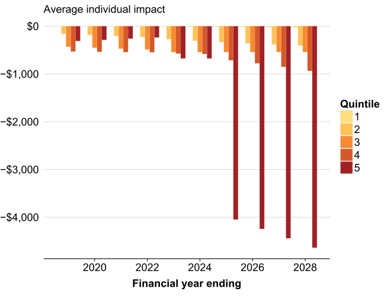
avg_individual_impact_by_Quintile_fy__2.75 <-
bound_models_Grattan2.75 %>%
.[.(unique_fy_year, "Budget2018"),
.(avg_delta = mean(delta),
max_income = max(Taxable_Income),
min_income = min(Taxable_Income),
avg_income = mean(Taxable_Income + 0)),
keyby = .(fy_year, id, Quintile)] %>%
.[, "Financial year ending" := fy2yr(fy_year)] %>%
.[, avg_delta := round(avg_delta, 2)] %T>%
fwrite("avg_individual_impact_by_Quintile_fy-2p75.csv") %>%
.[]
avg_individual_impact_by_Quintile_fy__2.75 %>%
.[, .(`Financial year ending`,
avg_delta,
Quintile = factor(Quintile))] %>%
grplot(aes(x = `Financial year ending`,
y = avg_delta,
fill = Quintile),
reverse = TRUE) +
geom_col(position = "dodge") +
ggtitle("Average individual impact (2.75% wages)") +
scale_y_continuous(labels = grattan_dollar) +
guides(fill = guide_legend(reverse = FALSE)) +
theme(axis.line.x = element_line(size = 0.5),
legend.position = "right")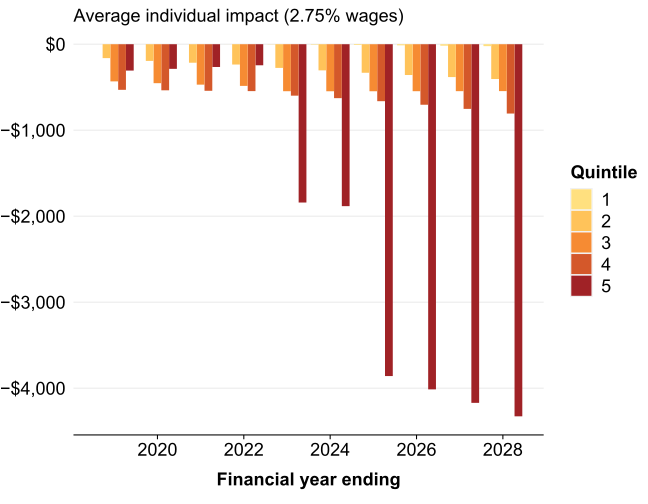
Brackets <-
bound_models[.(unique_fy_year, "Budget2018"),
.(Breaks = c(0, 37e3, 41e3, 87e3, 90e3, 120e3, 180e3, 200e3)),
keyby = c("fy_year", "id")]%>%
.[, Taxable_Income := as.integer(Breaks)] %>%
setkey(fy_year, id, Taxable_Income)avg_individual_impact_by_Bracket_fy <-
# Match every taxable income with the correct bracket
Brackets[setkey(bound_models[.(unique_fy_year, "Budget2018"),
.(fy_year, id, Taxable_Income, delta)],
fy_year, id, Taxable_Income),
roll=TRUE,
nomatch=0L] %>%
.[, .(avg_delta = mean(delta)),
keyby = .(fy_year, Breaks)] %>%
.[, "Financial year ending" := fy2yr(fy_year)]
avg_individual_impact_by_Bracket_fy %>%
.[, avg_delta := round(avg_delta, 2)] %>%
.[] %>%
.[, "Income bracket" := factor(Breaks,
levels = unique(Breaks),
labels = grattan_dollar(unique(Breaks)),
ordered = TRUE)] %T>%
fwrite("Total-revenue-vs-fy-by-income-bracket.csv") %>%
grplot(aes(x = `Financial year ending`, y = avg_delta, fill = `Income bracket`),
reverse = TRUE) +
geom_col() +
ggtitle("Average individual impact") +
scale_y_continuous(labels = grattan_dollar) +
guides(fill = guide_legend(reverse = TRUE)) +
theme(legend.position = "right")
#> I'm going off-piste: The Palette Of Nine is thine. May John have mercy on your soul.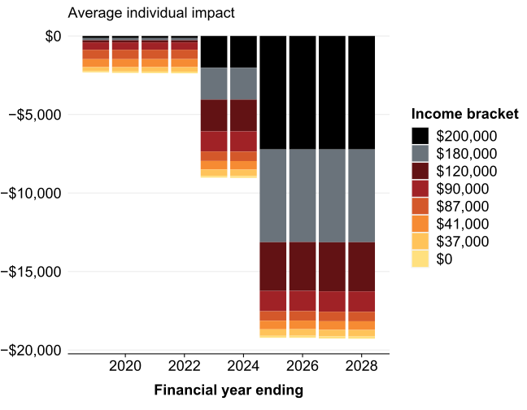
Brackets[setkey(bound_models[.(unique_fy_year, "Budget2018"),
.(fy_year, id, Taxable_Income,
total_delta = delta * WEIGHT / 1e9)],
fy_year, id, Taxable_Income),
roll=TRUE,
nomatch=0L] %>%
.[, .(total_delta = sum(total_delta)),
keyby = .(fy_year, Breaks)] %>%
.[, "Financial year ending" := fy2yr(fy_year)] %>%
.[, total_delta := round(total_delta, 2)] %>%
.[order(-Breaks)] %>%
.[, "Incomes above" := factor(Breaks,
levels = unique(Breaks),
labels = grattan_dollar(unique(Breaks)),
ordered = TRUE)] %T>%
fwrite("Total-revenue-vs-fy-by-incomes-above.csv") %>%
grplot(aes(x = `Financial year ending`, y = total_delta, fill = `Incomes above`)) +
geom_col() +
ggtitle("Total revenue") +
scale_y_continuous(labels = grattan_dollar) +
guides(fill = guide_legend(reverse = TRUE)) +
theme(legend.position = "right")
#> I'm going off-piste: The Palette Of Nine is thine. May John have mercy on your soul.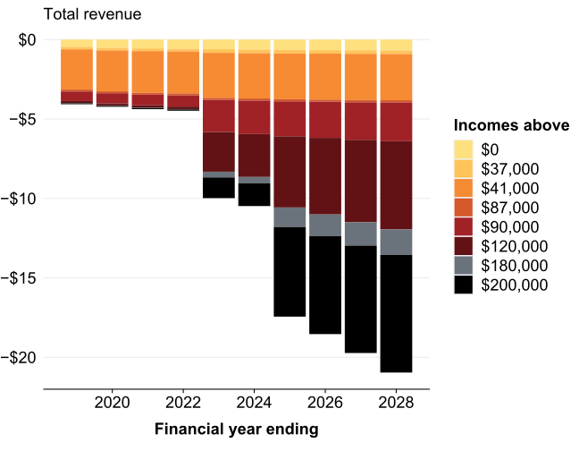
cost_in_202728 <-
revenue_foregone(bound_models[.("2027-28", "Budget2018")], FALSE, digits = 0)
cost_in_202728_top20 <-
bound_models[.("2027-28", "Budget2018")] %>%
.[ntile(Taxable_Income, 100) >= 80] %>%
revenue_foregone(revenue_positive = FALSE, digits = 0)minIncome_by_decile <-
s1718[, .(minIncome = min(Taxable_Income)), keyby = .(Decile = ntile(Taxable_Income, 10))] %>%
.[, minIncome := as.integer(round(minIncome, -3))] %>%
.[]avg_tax_rates_by_percentile_facet_fy <-
{
rbindlist(
list(
"Budget2018" = {
bound_models %>%
.[.(unique_fy_year, "Budget2018"),
.(avg_tax_rate = mean(coalesce(new_tax / Taxable_Income, 0)),
avg_tax_bill = mean(new_tax),
total_tax = sum(new_tax * WEIGHT / 1e9),
min_income = min(Taxable_Income),
max_income = max(Taxable_Income),
avg_income = mean(Taxable_Income + 0)),
keyby = .(fy_year, Taxable_Income_percentile)] %>%
.[, facet := "Budget 2018"]
},
"Grattan 20%" = {
bound_models_Grattan20 %>%
.[.(unique_fy_year, "Budget2018"),
.(avg_tax_rate = mean(coalesce(new_tax / Taxable_Income, 0)),
avg_tax_bill = mean(new_tax),
total_tax = sum(new_tax * WEIGHT / 1e9),
min_income = min(Taxable_Income),
max_income = max(Taxable_Income),
avg_income = mean(Taxable_Income + 0)),
keyby = .(fy_year, Taxable_Income_percentile)] %>%
.[, facet := "Budget 2018 (20% wage forecast)"]
},
"Grattan 80%" = {
bound_models_Grattan80 %>%
.[.(unique_fy_year, "Budget2018"),
.(avg_tax_rate = mean(coalesce(new_tax / Taxable_Income, 0)),
avg_tax_bill = mean(new_tax),
total_tax = sum(new_tax * WEIGHT / 1e9),
min_income = min(Taxable_Income),
max_income = max(Taxable_Income),
avg_income = mean(Taxable_Income + 0)),
keyby = .(fy_year, Taxable_Income_percentile)] %>%
.[, facet := "Budget 2018 (80% wage forecast)"]
},
"Baseline" = {
bound_models[.(unique_fy_year, "Budget2018_baseline"),
.(avg_tax_rate = mean(coalesce(new_tax / Taxable_Income, 0)),
avg_tax_bill = mean(new_tax),
total_tax = sum(new_tax * WEIGHT / 1e9),
min_income = min(Taxable_Income),
max_income = max(Taxable_Income),
avg_income = mean(Taxable_Income + 0)),
keyby = .(fy_year, Taxable_Income_percentile)] %>%
.[, facet := "Baseline"] %>%
.[]
},
"Current" = {
s1718[,
.(avg_tax_rate = mean(coalesce(new_tax / Taxable_Income, 0)),
avg_tax_bill = mean(new_tax),
min_income = min(Taxable_Income),
max_income = max(Taxable_Income),
total_tax = sum(new_tax * WEIGHT / 1e9),
avg_income = mean(Taxable_Income + 0)),
keyby = .(Taxable_Income_percentile)] %>%
.[, facet := "2017-18"] %>%
.[, fy_year := "2017-18"]
}),
use.names = TRUE, fill = TRUE,
idcol = "id")
} %>%
.[, "Financial year ending" := fy2yr(fy_year)] %>%
setkey(fy_year, id, Taxable_Income_percentile) %>%
.[, avg_tax_rate := round(avg_tax_rate, 3)] %>%
.[, total_tax := round(total_tax, 3)] %>%
setnames("total_tax", "total_tax_bn") %T>%
fwrite(file = "avg_tax_rates-by-facet-percentile.csv") %>%
.[]avg_tax_rates_by_percentile_facet_fy %>%
.[.(c("2017-18", "2027-28"))] %>%
.[facet %in% c("Baseline", "Budget 2018", "2017-18")] %T>%
{
dot <- .
dot[, .(facet, fy_year, Taxable_Income_percentile, avg_tax_rate)] %>%
dcast.data.table(Taxable_Income_percentile ~ facet + fy_year,
value.var = "avg_tax_rate") %>%
melt.data.table(id.vars = c("Taxable_Income_percentile", "2017-18_2017-18")) %>%
setnames("2017-18_2017-18", "T201718") %>%
.[, delta := value - T201718] %>%
fwrite("change-in-tax-rate-vs-201718-by-percentile.csv")
} %>%
.[, Decile := ntile(Taxable_Income_percentile, n = 10), by = "facet"] %T>%
{
dot <- .
dot %>%
.[, .(total_tax_bn = sum(total_tax_bn)), keyby = .(facet, Decile)] %>%
.[, "% tax paid" := 100 * total_tax_bn / sum(total_tax_bn), keyby = "facet"] %>%
.[, lapply(.SD, signif, 3), keyby = .(facet, Decile)] %>%
fwrite("prop-tax-paid-by-facet-decile.csv")
} %>%
grplot(aes(x = Taxable_Income_percentile, y = avg_tax_rate, color = facet)) +
geom_line() +
xlab("Taxable income percentile") +
scale_y_continuous(labels = percent) +
theme(legend.position = c(0, 1),
axis.line.x = element_line(size = 0.5),
legend.title = element_blank(),
legend.justification = c(0, 1))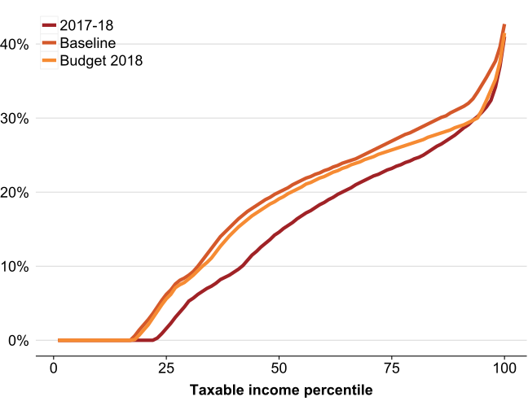
avg_tax_rates_by_percentile_facet_fy %>%
.[.(c("2017-18", "2027-28"))] %>%
.[facet %in% c("Baseline", "Budget 2018", "2017-18",
"Budget 2018 (20% wage forecast)",
"Budget 2018 (80% wage forecast)")] %>%
.[avg_tax_rate > 0] %>%
.[, labeli := which.max(avg_tax_rate > 0.15), keyby = "facet"] %>%
.[, i := seq_len(.N), keyby = "facet"] %>%
.[labeli == i, label := as.character(facet)] %>%
.[, label_color := "black"] %>%
.[facet == "2017-18", label_color := "white"] %>%
.[, facet := factor(facet,
levels = c("Baseline",
"Budget 2018",
"Budget 2018 (80% wage forecast)",
"Budget 2018 (20% wage forecast)",
"2017-18"),
ordered = TRUE)
] %>%
grplot(aes(x = Taxable_Income_percentile,
y = avg_tax_rate,
color = facet)) +
geom_line() +
# geom_label_repel(data = dot,
# aes(label = label,
# fill = facet),
# color = "black",
# force = 2,
# na.rm = TRUE) +
xlab("Taxable income percentile") +
scale_y_continuous(labels = percent, expand = c(0, 0)) +
theme(legend.position = c(0.95, 0.05),
axis.line.x = element_line(size = 0.5),
legend.title = element_blank(),
legend.justification = c(1, 0))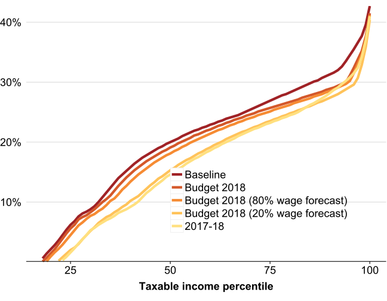
decile2income <- function(d) {
d <- as.integer(d)
grattan_dollar(minIncome_by_decile[.(d)][["minIncome"]])
}New Grattan Institute analysis highlights that most of the revenue reductions from the Turnbull Government’s full Personal Income Tax Plan are the result of lower taxes on high-income earners. Once the three-stage plan – including removing the 37c bracket – is complete, $15.1~billion of the annual $21~billion cost of the plan will result from collecting less tax from the top 20% of income earners, who currently have a taxable income of $68,000 or more.
The PIT plan will do little to unwind bracket creep’s gradual reduction of the progressivity of the tax system. Even with the PIT plan, average tax rates are forecast to be higher for all taxpayers in 2027-28 – except for very high-income earners who are effectively shielded from bracket creep by the plan. A taxpayer who earns $117,000 today (more than 90% of other taxpayers) will pay an average tax rate of NA per cent in 2027-28, unchanged from today. In contrast, average tax rates for middle-income earners will continue to rise. The average tax rate for a taxpayer who earns $27,000-a-year today (more than 30% of other taxpayers) will increase 6 percentage points (from NA per cent to NA per cent ). As a result, the highest-income taxpayers will bear a lower share of the total tax burden.
Costing and distributional analysis of PIT plan
The 2018-19 budget shows the annual cost of the PIT Plan until 2022. The Treasurer has indicated the ten-year cost of the plan is $140 billion. Grattan’s analysis shows the annual costs of the plan until 2028. The Grattan costing takes into account all elements of the PIT plan.
Most of the revenue reductions until 2021-22 are a result of the Low and Middle Income Tax Offset (“the Lamington”). But once the plan is fully implemented in 2024-25, there are much bigger revenue reductions because the top of the 32.5 cent bracket increases first to $120,000 and then to $200,000 (removing the 37c bracket). In 2028, these bracket changes account for \(-\)$20.5~billion of the \(-\)$21~billion in lower revenue.
Once fully implemented, most of the reduction in revenue under the PIT is retained by the top 20% of income earners, with a taxable income of $87,000 or more. In 2028, the reduction in tax collected from this group will account for $15 billion of the $25 billion cost of the plan.
# Quintile and financial year to tax cut
Qfy2Cut <- function(Quintile, fy) {
q <- factor(as.integer(Quintile), levels = 1:5)
stopifnot(haskey(avg_individual_impact_by_Quintile_fy),
identical(key(avg_individual_impact_by_Quintile_fy),
c("id", "fy_year", "Quintile")),
length(fy) == 1L,
length(q) == 1L)
ans <- -1*avg_individual_impact_by_Quintile_fy[.("Budget2018", fy, q), avg_delta]
grattan_dollar(round(ans, -2))
}By 2024-25, the income tax cuts are much larger for high-income earners, both in absolute terms and as a proportion of income. Those in the top 20 per cent will get an average tax cut of $4,600 a year, compared to $400 a year for someone in the second income quintile ($9,000 - $19,000).
Impact of the PIT plan on tax system progressivity
Australia’s progressive tax system ensures that people with higher incomes pay higher average rates of personal income tax. Without changes to tax scales, bracket creep gradually increases average tax rates for all taxpayers. Middle-income earners are affected most in terms of higher average tax rates.
The government claims the PIT plan protects middle-income Australians from bracket creep. Certainly the plan reduces average tax rates in 2027-28 for all taxpayers compared to what they would be if there were no changes to rates or brackets over that period.
avgTaxRate50 <- function(idd, fy) {
stopifnot(identical(key(avg_tax_rates_by_percentile_facet_fy),
c("fy_year", "id", "Taxable_Income_percentile")),
length(idd) == 1L,
length(fy) == 1L,
"avg_tax_rate" %in% names(avg_tax_rates_by_percentile_facet_fy))
avg_tax_rates_by_percentile_facet_fy[.(fy, idd, 50L), avg_tax_rate]
}But middle-income earners are not spared from bracket creep under the PIT plan. The average tax rate for a taxpayer at the 50th percentile will still increase by 5 percentage points (from 14.6% to 19.1% ) compared to 2017-18. Without further changes, average tax rates will be higher for most taxpayers.
The exception is the top 10% of income earners. Average tax rates for those on the highest incomes are virtually unchanged under this plan.
Once fully implemented, the PIT plan doesn’t change the progressivity of the tax system much. Overall, those on high incomes will pay a similar proportion of total tax revenues with or without the plan. But because of bracket creep, high income earners will be paying a lower proportion than today.
Table 1: Share of personal income tax paid falls for highest income earners under PIT plan
Share of total personal income tax paid by income decile (%)
to_prop <- function(x) {
if (is.double(x)) {
grattan_percent(x / sum(x), .percent.suffix = "%", digits = 1)
} else {
x
}
}if ("tax" %notchin% names(s1718)) {
if ("new_tax" %chin% names(s1718)) {
s1718[, tax := new_tax + 0]
} else {
s1718[, tax := income_tax(Taxable_Income, "2017-18", .dots.ATO = .SD)]
}
}ShareTaxPaid_by_Decile_id <-
list("2017-18" = select_grep(s1718, "^(new_)?tax$", .and = "Taxable_Income"),
"2027-28 baseline" = bound_models[.("2027-28", "Budget2018_baseline"), .(Taxable_Income, tax = new_tax)],
"2027-28 budget" = bound_models[.("2027-28", "Budget2018_baseline"), .(Taxable_Income, tax = new_tax)]
) %>%
rbindlist(use.names = TRUE,
fill = TRUE,
idcol = "id") %>%
.[, Decile := ntile(Taxable_Income, 10), keyby = "id"] %>%
.[, .(tot = sum(tax)), keyby = .(id, Decile)] %>%
.[, share := tot / sum(tot), keyby = "id"]
ShareTaxPaid_by_Percentile_id <-
list("2017-18" = select_grep(s1718, "^(new_)?tax$", .and = "Taxable_Income"),
"2027-28 baseline" = bound_models[.("2027-28", "Budget2018_baseline"), .(Taxable_Income, tax = new_tax)],
"2027-28 budget" = bound_models[.("2027-28", "Budget2018_baseline"), .(Taxable_Income, tax = new_tax)]
) %>%
rbindlist(use.names = TRUE,
fill = TRUE,
idcol = "id") %>%
.[, Percentile := ntile(Taxable_Income, 100), keyby = "id"] %>%
.[, .(tot = sum(tax)), keyby = .(id, Percentile)] %>%
.[, share := tot / sum(tot), keyby = "id"]
rbindlist(
list(ShareTaxPaid_by_Decile_id %>%
.[Decile != 10L] %>%
dcast(Decile ~ id, value.var = "share") %>%
.[, Decile := as.character(Decile)],
ShareTaxPaid_by_Percentile_id %>%
.[Percentile > 90L] %>%
.[, .(share = sum(share)),
by = .(id, Decile = 10L * (Percentile %/% 10L))] %>%
dcast(Decile ~ id, value.var = "share")),
use.names = TRUE,
fill = TRUE) %>%
.[Decile %enotin% as.character(1:9), Decile := if_else(Decile == 100, "1%", "91-99 perc.")] %>%
.[, lapply(.SD, round, 3), by = "Decile"] %T>%
fwrite("share-of-tot-income-tax-by-decile-top1pc-budget-wage-growth.csv") %>%
kable(align = "rrrr")| Decile | 2017-18 | 2027-28 baseline | 2027-28 budget |
|---|---|---|---|
| 1 | 0.000 | 0.000 | 0.000 |
| 2 | 0.000 | 0.000 | 0.000 |
| 3 | 0.004 | 0.008 | 0.008 |
| 4 | 0.016 | 0.023 | 0.023 |
| 5 | 0.034 | 0.043 | 0.043 |
| 6 | 0.058 | 0.063 | 0.063 |
| 7 | 0.085 | 0.087 | 0.087 |
| 8 | 0.121 | 0.122 | 0.122 |
| 9 | 0.178 | 0.179 | 0.179 |
| 91-99 perc. | 0.329 | 0.322 | 0.322 |
| 1% | 0.175 | 0.153 | 0.153 |
ShareTaxPaid_by_Decile_id <-
list("2017-18" = s1718[, .(Taxable_Income, tax)],
"2027-28 baseline" = bound_models_Grattan2.75[.("2027-28", "Budget2018_baseline"), .(Taxable_Income, tax = new_tax)],
"2027-28 budget" = bound_models_Grattan2.75[.("2027-28", "Budget2018"), .(Taxable_Income, tax = new_tax)]
) %>%
rbindlist(use.names = TRUE,
fill = TRUE,
idcol = "id") %>%
.[, Decile := ntile(Taxable_Income, 10), keyby = "id"] %>%
.[, .(tot = sum(tax)), keyby = .(id, Decile)] %>%
.[, share := tot / sum(tot), keyby = "id"]
ShareTaxPaid_by_Percentile_id <-
list("2017-18" = s1718[, .(Taxable_Income, tax)],
"2027-28 baseline" = bound_models_Grattan2.75[.("2027-28", "Budget2018_baseline"), .(Taxable_Income, tax = new_tax)],
"2027-28 budget" = bound_models_Grattan2.75[.("2027-28", "Budget2018"), .(Taxable_Income, tax = new_tax)]
) %>%
rbindlist(use.names = TRUE,
fill = TRUE,
idcol = "id") %>%
.[, Percentile := ntile(Taxable_Income, 100), keyby = "id"] %>%
.[, .(tot = sum(tax)), keyby = .(id, Percentile)] %>%
.[, share := tot / sum(tot), keyby = "id"]
rbindlist(
list(ShareTaxPaid_by_Decile_id %>%
.[Decile != 10L] %>%
dcast(Decile ~ id, value.var = "share") %>%
.[, Decile := as.character(Decile)],
ShareTaxPaid_by_Percentile_id %>%
.[Percentile > 90L] %>%
.[, .(share = sum(share)),
by = .(id, Decile = 10L * (Percentile %/% 10L))] %>%
dcast(Decile ~ id, value.var = "share")),
use.names = TRUE,
fill = TRUE) %>%
.[Decile %enotin% as.character(1:9), Decile := if_else(Decile == 100, "1%", "91-99 perc.")] %>%
.[, lapply(.SD, round, 3), by = "Decile"] %T>%
fwrite("share-of-tot-income-tax-by-decile-top1pc-2-75-wage-growth.csv") %>%
kable(align = "rrrr")| Decile | 2017-18 | 2027-28 baseline | 2027-28 budget |
|---|---|---|---|
| 1 | 0.000 | 0.000 | 0.000 |
| 2 | 0.000 | 0.000 | 0.000 |
| 3 | 0.004 | 0.007 | 0.007 |
| 4 | 0.016 | 0.022 | 0.021 |
| 5 | 0.034 | 0.042 | 0.041 |
| 6 | 0.058 | 0.062 | 0.063 |
| 7 | 0.085 | 0.086 | 0.089 |
| 8 | 0.121 | 0.121 | 0.123 |
| 9 | 0.178 | 0.178 | 0.177 |
| 91-99 perc. | 0.329 | 0.323 | 0.315 |
| 1% | 0.175 | 0.158 | 0.164 |
avg_tax_rates_by_percentile_facet_fy %>%
.[, .(tot_tax = sum(total_tax_bn)),
keyby = .(id, fy_year, Decile = ntile(Taxable_Income_percentile, 10))] %>%
.[fy_year %in% c("2017-18", "2027-28")] %>%
dcast.data.table(Decile ~ id + fy_year, value.var = "tot_tax") %>%
.[, lapply(.SD, to_prop)] %T>%
fwrite("share-total-personal-income-tax-per-decile.csv") %>%
kable(align = "rrrr")| Decile | Baseline_2027-28 | Budget2018_2027-28 | Current_2017-18 | Grattan 20%_2027-28 | Grattan 80%_2027-28 |
|---|---|---|---|---|---|
| 1 | 0.0% | 0.0% | 0.0% | 0.0% | 0.0% |
| 2 | 0.0% | 0.0% | 0.0% | 0.0% | 0.0% |
| 3 | 0.8% | 0.8% | 0.4% | 0.4% | 0.7% |
| 4 | 2.3% | 2.3% | 1.6% | 1.8% | 2.1% |
| 5 | 4.3% | 4.3% | 3.4% | 3.6% | 4.2% |
| 6 | 6.3% | 6.4% | 5.8% | 5.9% | 6.3% |
| 7 | 8.7% | 8.9% | 8.5% | 8.6% | 8.9% |
| 8 | 12.2% | 12.3% | 12.1% | 12.1% | 12.3% |
| 9 | 17.9% | 17.7% | 17.8% | 17.6% | 17.7% |
| 10 | 47.5% | 47.3% | 50.4% | 49.9% | 47.9% |
scale01 <- function(x) {
(x - min(x)) / (max(x) - min(x))
}
scale10 <- function(x) {
1 - scale01(x)
}Grey <- function(fy) {
Alpha <- 0.5 * scale10(fy2yr(fy))
out <- grey(rep_len(1, length(fy)))
for (i in seq_along(fy)) {
out[i] <- grey(0.7, alpha = Alpha[i])
}
out
}sample_files_all %>%
.[, .(avg_tax_rate = mean(avg_tax_rate)),
keyby = .(fy.year, Taxable_Income_percentile)] %>%
setnames("fy.year", "fy_year") %>%
rbind(avg_tax_rates_by_percentile_facet_fy[CJ(unique(fy_year),
c("Baseline", "Budget2018", "Current")),
.SD,
.SDcols = c("id", names(.)),
nomatch=0L],
use.names = TRUE,
fill = TRUE) %>%
setkey(fy_year, Taxable_Income_percentile) %>%
.[, z := fy_year %ein% "2017-18"] %>%
.[, avg_tax_rate_rel := avg_tax_rate - median(avg_tax_rate[z]),
keyby = .(Taxable_Income_percentile)] %>%
.[, is_max_hist := and(fy_year < "2017-18",
avg_tax_rate_rel == max(avg_tax_rate_rel[fy_year < "2017-18"]))] %>%
.[, is_min_hist := and(fy_year < "2017-18",
avg_tax_rate_rel == min(avg_tax_rate_rel[fy_year < "2017-18"]))] %T>%
.[, stopifnot(Taxable_Income_percentile[is_max_hist] < 30L,
fy_year[is_max_hist] == "2004-05",
avg_tax_rate_rel[is_max_hist] %between% c(0.06, 0.07),
Taxable_Income_percentile[is_min_hist] %between% c(45, 55),
avg_tax_rate_rel[is_min_hist] %between% c(-0.05, -0.04),
fy_year[is_min_hist] == "2009-10")] %>%
.[, colour := if_else(is.na(id),
grey(0.5),
if_else(id == "Baseline" & fy_year %in% c("2018-19", "2027-28"),
if_else(fy_year == "2018-19",
gpal(6)[4],
gpal(6)[5]),
if_else(fy_year == "2018-19",
gpal(6)[1],
gpal(6)[2])))] %>%
.[, alpha := if_else(is.na(id), 1.05 * scale01(fy2yr(fy_year)), 1)] %>%
.[fy_year %in% c("2004-05", "2009-10"), c("alpha", "colour") := list(0.8, "black")] %>%
.[implies(!is.na(id), fy_year %in% c("2018-19", "2027-28"))] %>%
.[, size := 0.8] %>%
.[fy_year %in% c("2004-05", "2009-10"), size := 1.1] %>%
.[fy_year %in% c("2018-19", "2027-28"), size := 1.4] %>%
.[Taxable_Income_percentile == 50L & !is.na(id),
label := paste0(id, "\n", as.character(fy_year))] %>%
# .[Taxable_Income_percentile == 95L & !is.na(id), label := ""] %>%
.[] %>%
.[, group := paste0(fy_year, colour)] %>%
.[, text := paste0(fy_year, " ", coalesce(id, ""), "\n",
formatC("Percentile: ", width = 24), Taxable_Income_percentile, "\n",
formatC("Avg. tax rate (17-18 = 0):", width = 24),
" ",
100 * round(avg_tax_rate_rel, 4))] %>%
.[] %>%
setnames("Taxable_Income_percentile",
"Taxable income percentile") %T>%
fwrite("Average-tax-rates-relative-201718-vs-Taxable-income-percentile-by-FY.csv") %>%
as.data.frame %>%
# .[Over65==FALSE] %>%
grplot(aes(x = `Taxable income percentile`,
y = avg_tax_rate_rel,
colour = colour,
group = group)) +
annotate("label",
x = 20,
y = 0.07,
hjust = 1,
label.size = NA,
label = "2004-05",
fontface = "bold") +
annotate("label",
x = 45,
y = -0.04,
hjust = 1,
label.size = NA,
label = "2009-10",
fontface = "bold") +
scale_color_identity() +
scale_size_identity() +
scale_alpha_identity() +
geom_line(aes(alpha = alpha, size = size)) +
# geom_blank(aes(x = 105, y = 0)) +
geom_label_repel(aes(label = label),
nudge_x = 2, force = 0.8,
na.rm = TRUE,
fontface = "bold",
label.size = NA) +
scale_y_continuous(labels = percent) +
ggtitle("Average tax rates relative to 2017-18") +
theme(legend.position = "right")
#> Scale for 'colour' is already present. Adding another scale for 'colour', which will replace the existing
#> scale.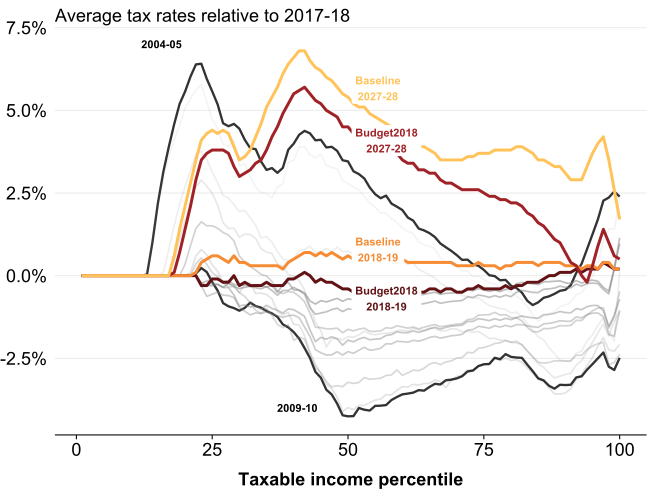
sample_files_all %>%
.[, .(avg_tax_rate = mean(avg_tax_rate)), keyby = .(fy.year, Taxable_Income_percentile)] %>%
setnames("fy.year", "fy_year") %>%
rbind(avg_tax_rates_by_percentile_facet_fy[, .SD, .SDcols = c("id", names(.))],
use.names = TRUE,
fill = TRUE) %>%
setkey(fy_year, Taxable_Income_percentile) %>%
.[, avg_tax_rate_rel := avg_tax_rate - first(avg_tax_rate),
keyby = .(Taxable_Income_percentile)] %>%
.[, colour := if_else(is.na(id),
grey(0.5),
if_else(id == "Baseline" & fy_year %in% c("2018-19", "2027-28"),
if_else(fy_year == "2018-19",
gpal(6)[4],
gpal(6)[5]),
if_else(fy_year == "2018-19",
gpal(6)[1],
gpal(6)[2])))] %>%
.[, alpha := if_else(is.na(id), 1.05 * scale01(fy2yr(fy_year)), 1)] %>%
# .[fy_year %in% c("2013-14"), c("alpha", "colour") := list(0.8, "black")] %>%
.[implies(!is.na(id), fy_year %in% c("2017-18", "2018-19", "2027-28"))] %>%
.[, size := 0.8] %>%
.[fy_year %in% c("2004-05", "2013-14"), size := 1.1] %>%
.[fy_year %in% c("2018-19", "2027-28"), size := 1.4] %>%
.[Taxable_Income_percentile == 50L & !is.na(id), label := paste0(id, "\n", as.character(fy_year))] %>%
# .[Taxable_Income_percentile == 95L & !is.na(id), label := ""] %>%
.[] %>%
.[, group := paste0(fy_year, colour)] %>%
.[, text := paste0(fy_year, " ", coalesce(id, ""), "\n",
formatC("Percentile: ", width = 24), Taxable_Income_percentile, "\n",
formatC("Avg. tax rate (03-04 = 0):", width = 24), " ", 100 * round(avg_tax_rate_rel, 4))] %>%
.[] %>%
setnames("Taxable_Income_percentile",
"Taxable income percentile") %T>%
fwrite("Average-tax-rates-relative-200304-vs-Taxable-income-percentile-by-FY.csv") %>%
as.data.frame %>%
# .[Over65==FALSE] %>%
grplot(aes(x = `Taxable income percentile`,
y = avg_tax_rate_rel,
colour = colour,
group = group,
text = text)) +
scale_color_identity() +
scale_size_identity() +
scale_alpha_identity() +
geom_line(aes(alpha = 1, size = size)) +
# geom_blank(aes(x = 105, y = 0)) +
geom_label_repel(aes(label = label),
nudge_x = 2, force = 0.8,
na.rm = TRUE,
fontface = "bold",
label.size = NA) +
scale_y_continuous(labels = percent) +
ggtitle("Average tax rates relative to 2003-04") +
theme(legend.position = "right") +
facet_wrap(~fy_year)
#> Scale for 'colour' is already present. Adding another scale for 'colour', which will replace the existing
#> scale.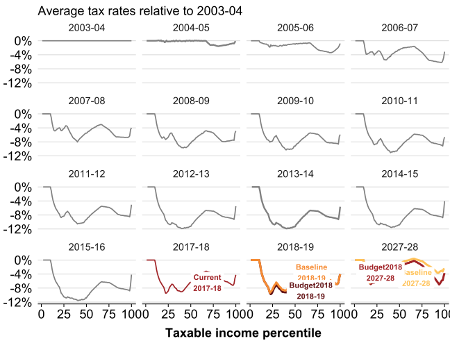
bound_models %>%
.[.("2019-20", "ALP2018")] %>%
.[, tax_saving := baseline_tax - new_tax] %>%
.[Taxable_Income <= 300e3] %>%
.[age_range > 1L] %>%
.[, .(tax_saving = mean(tax_saving)),
keyby = .(fy_year, Taxable_Income = round(Taxable_Income, -3))] %T>%
fwrite("ALP-proposal-201920-vs-taxable-income.csv") %>%
.[Taxable_Income %between% c(0, 225e3)] %>%
grplot(aes(x = Taxable_Income, y = tax_saving, color = fy_year)) +
geom_line() +
scale_x_continuous("Taxable income", labels = grattan_dollar, limits = c(0, 225e3)) 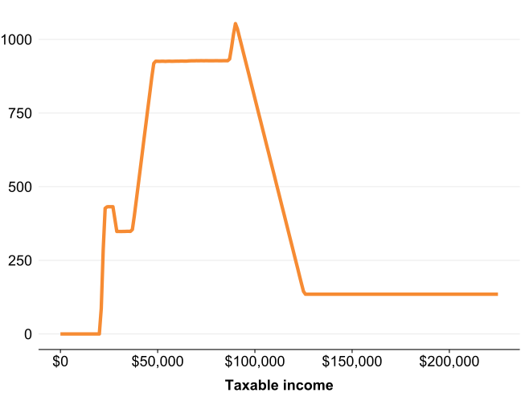
list(
{
sample_files_all %>%
.[, .(id = "Current", fy_year = fy.year, Taxable_Income, new_tax = tax)] %>%
.[]
},
s1617[, .(id = "Current", fy_year = "2016-17", Taxable_Income, new_tax)],
s1718[, .(id = "Current", fy_year = "2017-18", Taxable_Income, new_tax)],
bound_models[CJ(unique_fy_year, c("Budget2018", "Budget2018_baseline", "ALP2018")),
.(id, fy_year, Taxable_Income, new_tax)]
) %>%
rbindlist(use.names = TRUE,
fill = TRUE) %>%
.[, .(progressivity = progressivity(Taxable_Income, new_tax)), keyby = c("id", "fy_year")] %>%
.[id %chin% c("Budget2018", "Current", "Budget2018_baseline", "ALP2018")] %>%
.[, Year := fy2yr(fy_year)] %>%
.[id == "Budget2018_baseline", id := "Baseline"] %>%
.[, progressivity := round(progressivity, 4)] %>%
.[] %T>%
fwrite("Reynolds-Smolensky-vs-year.csv") %>%
grplot(aes(x = Year, y = progressivity, color = id, group = id)) +
scale_x_continuous(breaks = c(2005, 2010, 2015, 2020, 2025)) +
geom_line() +
theme(legend.position = "right",
legend.title = element_blank())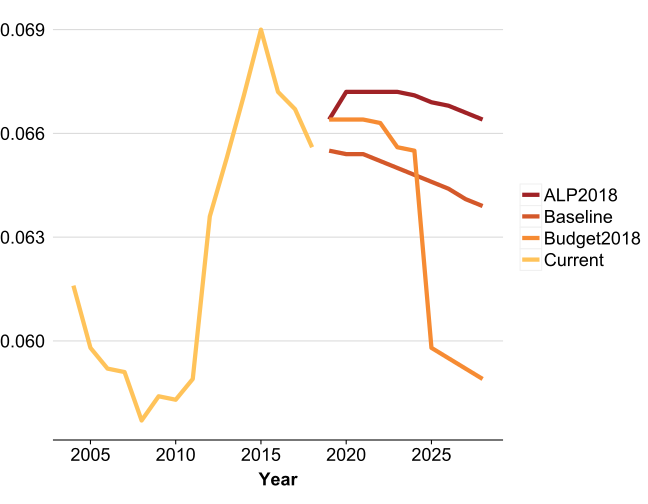
progressivity_80 <-
bound_models_Grattan80 %>%
.[.(unique_fy_year, "Budget2018")] %>%
.[, .(progressivity = progressivity(Taxable_Income, new_tax)), keyby = c("fy_year")] %>%
.[]progressivity_20 <-
bound_models_Grattan20 %>%
.[.(unique_fy_year, "Budget2018")] %>%
.[, .(progressivity = progressivity(Taxable_Income, new_tax)), keyby = c("fy_year")] %>%
.[]progressivity2.75 <-
bound_models_Grattan2.75 %>%
.[.(unique_fy_year, "Budget2018"),
.(progressivity = progressivity(Taxable_Income, new_tax)),
keyby = c("fy_year")] %>%
.[, id := "Wages @ 2.75%"] %>%
.[]rbindlist(list(progressivity2.75,
fread("Reynolds-Smolensky-vs-year.csv")),
use.names = TRUE,
fill = TRUE) %>%
.[id %in% c("Current", "Baseline"), id := "Current/Baseline"] %>%
setorder(-fy_year, -progressivity) %>%
.[, id := factor(id, levels = unique(id), ordered = TRUE)] %>%
.[, Year := coalesce(Year, as.integer(fy2yr(fy_year))), keyby = "fy_year"] %>%
grplot(aes(x = Year, y = progressivity,
color = id,
group = id)) +
geom_line() +
theme(legend.position = "right",
legend.title = element_blank())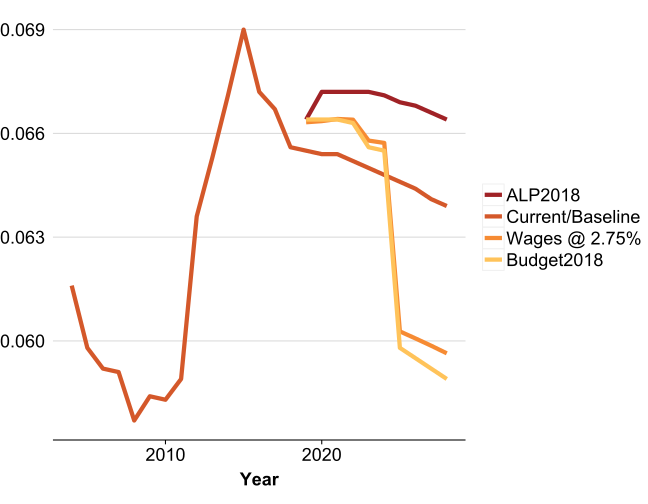
avg_tax_rates_by_percentile_facet_fy_historical <-
list(
{
sample_files_all %>%
.[, .(fy_year = fy.year, Taxable_Income, Taxable_Income_percentile, new_tax = tax)] %>%
.[, id := "Current"] %>%
set_cols_first("id") %>%
.[]
},
s1718[, .(id = "Current", fy_year = "2017-18", Taxable_Income, Taxable_Income_percentile, new_tax)],
s1617[, .(id = "Current", fy_year = "2016-17", Taxable_Income, Taxable_Income_percentile, new_tax)],
bound_models[, .(id, fy_year, Taxable_Income, Taxable_Income_percentile, new_tax)]
) %>%
rbindlist(use.names = TRUE,
fill = TRUE) %>%
.[, new_avg_tax_rate := coalesce(new_tax / Taxable_Income, 0)] %>%
.[, .(new_avg_tax_rate = mean(new_avg_tax_rate)),
keyby = .(fy_year, id, Taxable_Income_percentile)] %>%
.[] %>%
.[implies(id %pin% "_", endsWith(id, "baseline"))] %>%
.[id %pin% c("aseline", "urrent"), id := "Baseline/Current"] %>%
.[order(fy_year)] %>%
dcast(fy_year + id ~ Taxable_Income_percentile, value.var = "new_avg_tax_rate", FUN = identity) %T>%
fwrite("avg-tax-rate-wide-by-model-fy_year.tsv", quote = TRUE, sep = "\t") %>%
.[]s202728_in_1920 <-
model_income_tax(s1819,
"2017-18",
ordinary_tax_rates = ordinary_tax_rates(10),
ordinary_tax_thresholds = ordinary_tax_thresholds(10),
Budget2018_lamington = TRUE,
Budget2018_lito_202223 = TRUE)
alternative <-
model_income_tax(s1819,
"2017-18",
ordinary_tax_rates = c(0, 0.19, 0.325, 0.37, 0.45),
ordinary_tax_thresholds = c(0, 18200, 37000, 90000, 180000))
r1 <- 0
while (r1 < 20 && revenue_foregone(alternative) > revenue_foregone(s202728_in_1920)) {
print(revenue_foregone(alternative))
r1 <- r1 + 1
alternative <-
model_income_tax(s1819,
"2017-18",
ordinary_tax_rates = c(0, 0.19 - r1/200, 0.325 - r1/200, 0.37, 0.45),
ordinary_tax_thresholds = c(0, 18200, 37000, 90000, 180000))
}
#> [1] "-\\$375 million"
#> [1] "-\\$2.7 billion"
alternative %>%
.[, new_avg_tax_rate := coalesce(new_tax / Taxable_Income, 0)] %>%
.[, old_avg_tax_rate := coalesce(baseline_tax / Taxable_Income, 0)] %>%
.[, delta := new_tax - baseline_tax] %>%
.[, .(old_avg_tax_rate = mean(old_avg_tax_rate),
new_avg_tax_rate = mean(new_avg_tax_rate),
avg_delta = mean(delta)),
keyby = .(Taxable_Income_percentile = ntile(Taxable_Income, 100))] %>%
melt(id.vars = c("Taxable_Income_percentile", "avg_delta")) %>%
.[, variable := factor(variable, levels = unique(.$variable), ordered = TRUE)] %>%
ggplot(aes(x = Taxable_Income_percentile, y = value, color = variable)) +
geom_line()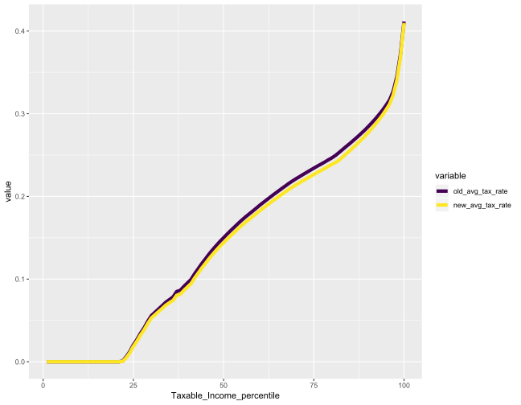
baseline_share <-
bound_models[.("2027-28", "Budget2018_baseline"),
.(total_delta = sum(delta)),
keyby = .(Taxable_Income_percentile)] %>%
.[, prop := total_delta / sum(total_delta)]
govt_share <-
bound_models %>%
.[.("2027-28", "Budget2018"),
.(total_delta = sum(delta)),
keyby = .(Decile = .ntile(Taxable_Income_percentile, 10))] %>%
.[, prop := total_delta / sum(total_delta)] %>%
fwrite("prop-share-tax-benefit-govt-by-decile.csv")
alternative_share <-
alternative %>%
.[, .(total_delta = sum(delta)), keyby = .(Decile = ntile(Taxable_Income, 10))] %>%
.[, prop := total_delta / sum(total_delta)] %>%
fwrite("prop-share-tax-benefit-alternative-by-decile.csv")
alternative %>%
.[, .(old_tot_tax_paid = sum(baseline_tax * WEIGHT),
new_tot_tax_paid = sum(new_tax * WEIGHT)),
keyby = .(Taxable_Income_decile = ntile(Taxable_Income, 10))] %>%
.[] %>%
melt.data.table(id.vars = key(.)) %>%
ggplot(aes(x = Taxable_Income_decile, y = value, fill = variable)) +
geom_col(position = "dodge") +
scale_y_continuous(labels = function(x) paste0(grattan_dollar(x / 1e9), " bn"))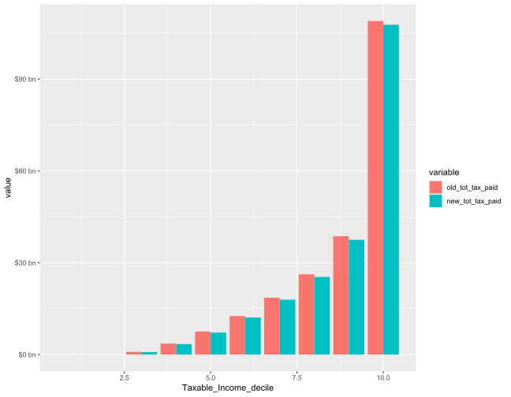
bound_models %>%
.[.(unique_fy_year, "Budget2018"),
.(total_delta_bn = sum((new_tax - baseline_tax) * WEIGHT / 1e9),
max_income = max(Taxable_Income),
min_income = min(Taxable_Income),
avg_income = mean(Taxable_Income)),
keyby = c("fy_year", "Quintile")] %>%
.[, "Financial year ending" := fy2yr(.BY[[1]]), keyby = c("fy_year", "Quintile")] %>%
.[, total_delta_bn := round(total_delta_bn, 2), keyby = c("fy_year", "Quintile")] %>%
.[, avg_income := round(avg_income, 2), keyby = c("fy_year", "Quintile")] %>%
setorder(fy_year, -Quintile) %>%
fwrite("budget2018-total-revenue-vs-fy-by-quintile.csv")print(revenue_foregone(bound_models[.("2018-19", "Baseline_brackets_cpi")]))
#> [1] "-\\$2.2 billion"avg_tax_rate_by_percentile_brackets_cpi <-
bound_models[.(unique_fy_year, "Baseline_brackets_cpi"),
.(fy_year, Taxable_Income, new_tax, Taxable_Income_percentile)] %>%
.[, avg_tax_rate := coalesce(new_tax / Taxable_Income, 0)] %>%
.[, .(avg_tax_rate = mean(avg_tax_rate)),
keyby = .(fy_year, Taxable_Income_percentile)]
fwrite(avg_tax_rate_by_percentile_brackets_cpi,
"avg_tax_rate_by_percentile_brackets_cpi.csv")total_population_1516 <-
aus_pop_qtr_age(date = as.Date("2016-01-01"),
age = 15:100,
tbl = TRUE) %$%
sum(Value) %>%
multiply_by(s1718[1][["WEIGHT"]] / 50)avg_tax_by_decile_allpersons201718 <-
s1718[, .(new_tax, baseline_tax = as.double(baseline_tax), Taxable_Income, WEIGHT)] %>%
rbind(data.table(new_tax = 0,
baseline_tax = 0,
Taxable_Income = 0L,
WEIGHT = total_population_1516 - taxable_individuals_1718),
use.names = TRUE,
fill = TRUE) %>%
.[, Taxable_Income_decile := weighted_ntile(Taxable_Income, WEIGHT, 10)] %>%
.[, .(total = sum(new_tax),
min_income = min(Taxable_Income),
tot_adults = sum(WEIGHT)), keyby = "Taxable_Income_decile"] %>%
.[, share := round(total / sum(total), 3)] %T>%
fwrite("avg_tax_by_decile_allpersons201718.csv") %>%
.[]avg_tax_by_decile_allpersons202425 <-
bound_models[.("2027-28", "Budget2018"),
.(new_tax, baseline_tax, Taxable_Income, WEIGHT)] %>%
rbind(data.table(new_tax = 0,
baseline_tax = 0,
Taxable_Income = 0L,
WEIGHT = wt_rel1718v202425 * (total_population_1516 - taxable_individuals_1718)),
use.names = TRUE, fill = TRUE) %>%
.[, Taxable_Income_decile := weighted_ntile(Taxable_Income, WEIGHT, 10)] %>%
.[, .(total = sum(new_tax),
min_income = min(Taxable_Income),
tot_adults = sum(WEIGHT)),
keyby = "Taxable_Income_decile"] %>%
.[, share := round(total / sum(total), 3)] %T>%
fwrite("avg_tax_by_decile_allpersons202425.csv") %>%
.[]avg_tax_by_decile_allpersons202728 <-
bound_models[.("2027-28", "Budget2018"),
.(new_tax, baseline_tax, Taxable_Income, WEIGHT)] %>%
rbind(data.table(new_tax = 0,
baseline_tax = 0,
Taxable_Income = 0L,
WEIGHT = wt_rel1718v202728 * (total_population_1516 - taxable_individuals_1718)),
use.names = TRUE, fill = TRUE) %>%
.[, Taxable_Income_decile := weighted_ntile(Taxable_Income, WEIGHT, 10)] %>%
.[, .(total = sum(new_tax),
min_income = min(Taxable_Income),
tot_adults = sum(WEIGHT)), keyby = "Taxable_Income_decile"] %>%
.[, share := round(total / sum(total), 3)] %T>%
fwrite("avg_tax_by_decile_allpersons202728.csv") %>%
.[]avg_tax_by_quintile_allpersons201718 <-
avg_tax_by_decile_allpersons201718 %>%
.[, .(total = sum(total)), keyby = .(Quintile = ceiling(Taxable_Income_decile / 2))] %>%
.[, share := total / sum(total)] %T>%
fwrite("avg_tax_by_quintile_allpersons201718.csv") %>%
.[]avg_tax_by_quintile_allpersons202425 <-
avg_tax_by_decile_allpersons202425 %>%
.[, .(total = sum(total)), keyby = .(Quintile = ceiling(Taxable_Income_decile / 2))] %>%
.[, share := total / sum(total)] %T>%
fwrite("avg_tax_by_quintile_allpersons202425.csv") %>%
.[]decile201718 <-
s1718[, .(new_tax, baseline_tax = as.double(baseline_tax), Taxable_Income, WEIGHT)] %>%
rbind(data.table(new_tax = 0,
baseline_tax = 0,
Taxable_Income = 0L,
WEIGHT = total_population_1516 - sample_files_all[.("2015-16"), sum(WEIGHT)]),
use.names = TRUE,
fill = TRUE) %>%
.[, Taxable_Income_decile := weighted_ntile(Taxable_Income, WEIGHT, 10)] %>%
.[, .(Taxable_Income = min(Taxable_Income),
tot = sum(baseline_tax * WEIGHT / 1e9)),
keyby = .(Taxable_Income_decile)] %>%
.[, min_Taxable_Income := round(Taxable_Income, -3)] %>%
.[, prop := tot / sum(tot)] %>%
setkey(Taxable_Income) %>%
.[]bound_models[.("2024-25", "Budget2018"),
.(new_tax, baseline_tax, Taxable_Income, WEIGHT)] %>%
rbind(data.table(new_tax = 0,
baseline_tax = 0,
Taxable_Income = 0L,
WEIGHT = wt_rel1718v202728 * (total_population_1516 - taxable_individuals_1718)),
use.names = TRUE, fill = TRUE) %>%
setkey(Taxable_Income) %>%
decile201718[., roll = TRUE] %>%
.[, .(tot = sum(new_tax * WEIGHT / 1e9)), keyby = .(Taxable_Income_decile, min_Taxable_Income)] %>%
.[, prop := tot / sum(tot)] %>%
.[] %>%
.[, .(Decile = Taxable_Income_decile,
`Min income` = grattan_dollar(min_Taxable_Income),
`Tax paid ($bn)` = tot,
`% paid` = prop)] %>%
kable| Decile | Min income | Tax paid ($bn) | % paid |
|---|---|---|---|
| 1 | $0 | 0.0000000 | 0.0000000 |
| 4 | $0 | 0.0000000 | 0.0000000 |
| 5 | $10,000 | 0.0439845 | 0.0001500 |
| 6 | $24,000 | 3.5060805 | 0.0119562 |
| 7 | $37,000 | 10.6716616 | 0.0363917 |
| 8 | $50,000 | 25.4013920 | 0.0866219 |
| 9 | $68,000 | 48.1059969 | 0.1640475 |
| 10 | $99,000 | 205.5152815 | 0.7008328 |
bound_models[.("2027-28", "Budget2018"),
.(new_tax, baseline_tax, Taxable_Income, WEIGHT)] %>%
rbind(data.table(new_tax = 0,
baseline_tax = 0,
Taxable_Income = 0L,
WEIGHT = wt_rel1718v202728 * (total_population_1516 - taxable_individuals_1718)),
use.names = TRUE, fill = TRUE) %>%
.[, .(new_tax, baseline_tax, Taxable_Income, WEIGHT)] %>%
setkey(Taxable_Income) %>%
decile201718[., roll = TRUE] %>%
.[, .(tot = sum(new_tax)), keyby = .(Taxable_Income_decile, min_Taxable_Income)] %>%
.[, prop := tot / sum(tot)] %>%
.[] %>%
.[, .(Decile = Taxable_Income_decile,
`Min income` = grattan_dollar(min_Taxable_Income),
`Tax paid ($bn)` = tot,
`% paid` = prop)] %>%
kable| Decile | Min income | Tax paid ($bn) | % paid |
|---|---|---|---|
| 1 | $0 | 0 | 0.0000000 |
| 4 | $0 | 0 | 0.0000000 |
| 5 | $10,000 | 671637 | 0.0001144 |
| 6 | $24,000 | 55625695 | 0.0094710 |
| 7 | $37,000 | 167844994 | 0.0285779 |
| 8 | $50,000 | 439131855 | 0.0747682 |
| 9 | $68,000 | 856626529 | 0.1458523 |
| 10 | $99,000 | 4353345219 | 0.7412162 |
s2728_various_wages <-
if (file.exists(s2728_various_wages.fst <- "budget-2018_cache/s2728_various_wages.fst") && cache) {
read_fst(s2728_various_wages.fst, as.data.table = TRUE)
} else {
lapply(c(0.02, 0.025, 0.03, 0.035), function(wage_r) {
project(sample_file_1516, h = 12L, wage.series = wage_r) %>%
grattan::model_income_tax(
baseline_fy = "2017-18",
medicare_levy_lower_threshold = medicare_levy_lower_threshold("2027-28"),
medicare_levy_lower_sapto_threshold = medicare_levy_lower_sapto_threshold("2027-28"),
medicare_levy_lower_family_threshold = medicare_levy_lower_family_threshold("2027-28"),
medicare_levy_lower_family_sapto_threshold = medicare_levy_lower_family_sapto_threshold("2027-28"),
medicare_levy_lower_up_for_each_child = medicare_levy_lower_up_for_each_child("2027-28"),
warn_upper_thresholds = FALSE,
Budget2018_lamington = FALSE,
Budget2018_lito_202223 = TRUE,
Budget2018_watr = FALSE,
ordinary_tax_thresholds = ordinary_tax_thresholds("2027-28"),
ordinary_tax_rates = ordinary_tax_rates("2027-28")) %>%
.[, .(Ind, age_range, Total_PP_BE_amt, Total_NPP_BE_amt,
Taxable_Income, new_tax, baseline_tax, WEIGHT,
id = wage_r)]
}) %>%
rbindlist(use.names = TRUE, fill = TRUE) %>%
.[, new_tax := as.integer(new_tax)] %>%
.[, delta := new_tax - baseline_tax] %T>%
write_fst(s2728_various_wages.fst) %>%
.[]
}compare_avg_tax_rates(s2728_various_wages, s1718[, baseline_tax := tax]) %>%
.[, "Wage assumption" := factor(percent(id))] %T>%
fwrite("compare-avg-tax-rates-2027-28-wage-assumptions.csv") %>%
grplot(aes(x = Taxable_Income_percentile,
y = delta_avgTaxRate,
color = `Wage assumption`,
group = `Wage assumption`)) +
geom_line() +
xlab("Taxable Income percentile") +
guides(color = guide_legend(reverse = TRUE)) +
theme(legend.position = c(1, 1),
legend.justification = c(1, 1))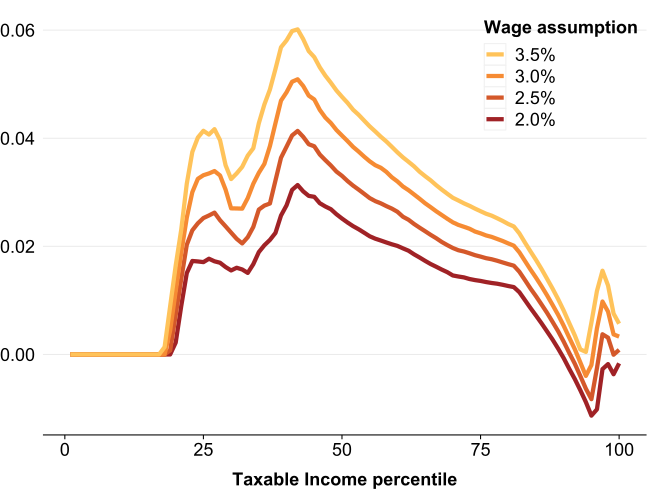
bound_models[.(yr2fy(2019:2025), "Budget2018")] %>%
.[, new_tax := as.double(new_tax)] %>%
.[, .(tot_tax = sum(new_tax)),
keyby = .(fy2018 = id,# if_else(fy_year == "2018-19", "2018-19", "2019-20 - 2024-25"),
Quintile = weighted_ntile(Taxable_Income, n = 5))] %>%
.[, p := tot_tax / sum(tot_tax), keyby = "fy2018"] %>%
.[]
#> fy2018 Quintile tot_tax p
#> 1: Budget2018 1 0 0.00000000
#> 2: Budget2018 2 726293117 0.02243683
#> 3: Budget2018 3 3074742262 0.09498570
#> 4: Budget2018 4 6675273641 0.20621421
#> 5: Budget2018 5 21894270578 0.67636325adult_population_projections <-
lapply(as.Date(paste0(2001:2016, "-06-30")), aus_pop_qtr_age, age = 18:100, tbl = TRUE) %>%
rbindlist %>%
.[, .(pop = sum(Value)), keyby = "Date"] %$%
forecast::forecast(pop, h = 12) %>%
as.data.frame %>%
dplyr::mutate(YR = as.integer(rownames(.)) + 2000L) %>%
as.data.table %>%
melt(id.vars = "YR")
adult_population_projections %>%
{
dot <- .
ribbon <-
dot[variable %enotin% "Point Forecast"] %>%
.[, c("LowHi", "Level") := tstrsplit(variable, split = " ")] %>%
.[, variable := NULL] %>%
dcast(... ~ LowHi, value.var = "value") %>%
.[, Level := as.integer(Level)]
grplot(dot) +
geom_ribbon(data = ribbon[Level == 80L],
aes(x = YR, ymin = Lo, ymax = Hi),
alpha = 0.4) +
geom_ribbon(data = ribbon[Level == 95L],
aes(x = YR, ymin = Lo, ymax = Hi),
alpha = 0.3) +
geom_line(data = dot[variable %ein% "Point Forecast"],
aes(x = YR, y = value, color = variable)) +
geom_hline(yintercept = 22.37e6) +
geom_vline(xintercept = 2024) +
scale_y_continuous(label = function(x) paste0(x / 1e6, "M"))
}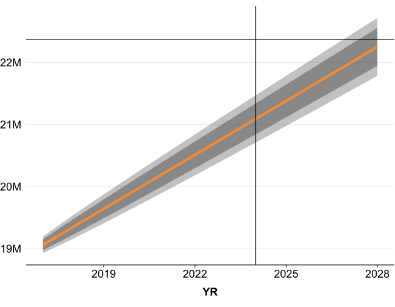
s1516 <- copy(sample_file_1516)[, tax := income_tax(Taxable_Income, "2015-16", .dots.ATO = .SD)]
n_taxpayers_1516 <- s1516[tax > 1, .N * 50]
n_taxpayers_1718 <- s1718[tax > 1, sum(WEIGHT)]
v <- (1 / (2025 - 2016))
deloitte_wage_r <- (11.6e6 / n_taxpayers_1516) ^ v
budget_wage_r <-
(bound_models[.("2024-25", "Budget2018")][new_tax > 1, sum(WEIGHT)] / n_taxpayers_1516) ^ vadultpop2016 <- sum(aus_pop_qtr_age(date = as.Date("2016-06-30"), age = 18:100))
deloitte_pop_r <- (22.37e6 / adultpop2016) ^ v
budget_pop_r <-
adult_population_projections %>%
.[YR == 2025] %>%
.[variable == "Point Forecast", (value / adultpop2016) ^ v]
Growth assumptions:
s2425_Deloitte_LF_growth <-
project(sample_file_1516, h = 9L) %>%
model_income_tax(baseline_fy = "2017-18",
ordinary_tax_thresholds = ordinary_tax_thresholds("2024-25"),
ordinary_tax_rates = ordinary_tax_rates("2024-25"),
Budget2018_lito_202223 = TRUE,
# medicare_levy_rate = 0.02,
# medicare_levy_taper = 0.1,
medicare_levy_lower_threshold = medicare_levy_lower_threshold("2024-25"), # 24950
medicare_levy_upper_threshold = 31188,
medicare_levy_lower_sapto_threshold = medicare_levy_lower_sapto_threshold("2024-25"), # 39460
medicare_levy_upper_sapto_threshold = 49325,
medicare_levy_lower_family_threshold = medicare_levy_lower_family_threshold("2024-25"), # 54930
medicare_levy_lower_family_sapto_threshold = medicare_levy_lower_family_sapto_threshold("2024-25")) %>% # 54930
# Ensure number of taxpayers = 11.6 million
.[new_tax >= 1, WEIGHT := 11.6e6 / sum(new_tax > 0)] %>%
# Ensure total population is 22.37 million
.[, WEIGHT := WEIGHT * if_else(new_tax < 1,
1 + (22.37e6 - 11.6e6 - sum(WEIGHT[new_tax < 1])) / sum(WEIGHT[new_tax < 1]),
1)]
stopifnot(s2425_Deloitte_LF_growth[new_tax > 1, sum(WEIGHT)] %between% c(11.5e6, 11.7e6))
stopifnot(s2425_Deloitte_LF_growth[, sum(WEIGHT)] %between% c(22.2e6, 22.4e6))
s2425_Deloitte_LF_growth %>%
.[, .(total_tax_paid = sum(new_tax * WEIGHT)),
keyby = .(Quintile = weighted_ntile(Taxable_Income, weights = WEIGHT, n = 5))] %>%
.[, p := total_tax_paid / sum(total_tax_paid)] %>%
.[]
#> Quintile total_tax_paid p
#> 1: 1 0 0.0000000
#> 2: 2 0 0.0000000
#> 3: 3 5796605482 0.0227209
#> 4: 4 47184153753 0.1849473
#> 5: 5 202141412569 0.7923318minIncome_by_Quintile_Deloitte_method201718 <-
avg_tax_by_decile_allpersons201718 %>%
.[, .(minIncome = round(min(min_income), -3)),
keyby = .(Quintile = {{Taxable_Income_decile - 1L} %/% 2L} + 1L)]
fwrite(minIncome_by_Quintile_Deloitte_method201718,
"minIncome_by_Quintile_Deloitte_method201718.csv")minIncome_by_Quintile_Deloitte_method202425 <-
avg_tax_by_decile_allpersons202425 %>%
.[, .(minIncome = round(min(min_income), -3)),
keyby = .(Quintile = {{Taxable_Income_decile - 1L} %/% 2L} + 1L)]
fwrite(minIncome_by_Quintile_Deloitte_method202425,
"minIncome_by_Quintile_Deloitte_method202425.csv")p_geq_120k_202728 <-
bound_models[.("2027-28", "Budget2018")] %$%
mean(Taxable_Income > 120e3)
stopifnot(round(p_geq_120k_202728, 1) == 0.2)Of course, a tax cut of $14 billion a year is a tricky sell when it benefits less than 2 in 10 of income earners in 2027-28. But the government has made its own life harder by using misleading statistics and not providing the numbers that could support its best argument.
current_tax_paid_geq_180k <-
s1718 %>%
.[, tax := income_tax(Taxable_Income, "2017-18", .dots.ATO = s1718)] %>%
.[, .(Taxable_Income, tax)] %>%
.[, .(tot = sum(tax)), keyby = .(Over180k = Taxable_Income > 180e3)] %>%
.[, prop := tot / sum(tot)] %>%
.[(Over180k)] %>%
.[["prop"]] %>%
grattan_percent(.percent.suffix = " per cent")
tax_paid_geq180k_Budget202728 <-
bound_models[.("2027-28", "Budget2018")] %>%
.[, .(Taxable_Income, tax = as.double(new_tax))] %>%
.[, .(tot = sum(tax)), keyby = .(Over180k = Taxable_Income > 180e3)] %>%
.[, prop := tot / sum(tot)] %>%
.[(Over180k)] %>%
.[["prop"]] %>%
grattan_percent(.percent.suffix = " per cent")
prop_persons_geq180k_201718 <-
s1718[, .(n = .N), keyby = .(Over180k = Taxable_Income > 180e3)] %>%
.[, prop := n / sum(n)] %>%
.[(Over180k)] %>%
.[["prop"]]
prop_persons_geq180k_Budget202728 <-
bound_models[.("2027-28", "Budget2018")] %>%
.[, .(tot = sum(WEIGHT)), keyby = .(Over180k = Taxable_Income > 180e3)] %>%
.[, prop := tot / sum(tot)] %>%
.[(Over180k)] %>%
.[["prop"]]
stopifnot(!exists("twice1"))
twice1 <-
if (prop_persons_geq180k_Budget202728 / prop_persons_geq180k_201718 > 2) {
"twice"
} else {
twice1
}Another tricky claim is that without change those earning over $180,000 will go from paying 32.0 per cent to 43.0 per cent of income tax. But this is sleight of hand: twice as many people could be expected to be earning this income – so of course they will collectively pay a greater share of income tax.
prop_tax_earnt_by_quintile_201718 <-
s1718[,
.(tax_earnt_bn = sum(Taxable_Income * WEIGHT / 1e9)),
keyby = .(Quintile = ntile(Taxable_Income, 5))] %>%
.[, prop := tax_earnt_bn / sum(tax_earnt_bn)] %>%
.[]
prop_tax_paid_by_quintile_202728_baseline <-
bound_models[.("2027-28", "Budget2018")] %>%
.[, .(tax_paid = sum(as.numeric(new_tax))), keyby = .(Quintile = ntile(Taxable_Income, 5))] %>%
.[, prop := tax_paid / sum(tax_paid)] %>%
.[]
prop_tax_paid_by_quintile_202728_Budget <-
bound_models[.("2027-28", "Budget2018")] %>%
.[, .(tax_paid = sum(as.numeric(new_tax))), keyby = .(Quintile = ntile(Taxable_Income, 5))] %>%
.[, prop := tax_paid / sum(tax_paid)] %>%
.[]The government’s best and most honest argument is that the tax package as a whole won’t materially change the progressivity of the income tax system. Without change, the top 20% of income earners – who earn 50.8 per cent per cent of taxable income – will pay 64.989 per cent of income tax. And under the package they will pay 64.9890 per cent.
We can apply timing issues: 85% revenue is tax revenue and 15% at the time of assessment for those under $180,000; 75% and 25% at time of assessment.
# setindex(bound_models, id)
bound_models_with_timings <-
lapply(c(FALSE, TRUE), function(x) {
bound_models[.(unique_fy_year, "Budget2018"),
.(id,
YearOfAssessment = x,
fy_year2 = if (x) yr2fy(fy2yr(.BY[[1L]]) + x) else .BY[[1L]],
Ind,
Taxable_Income,
delta,
WEIGHT),
keyby = "fy_year"][, fy_year := NULL]
}) %>%
rbindlist() %>%
.[(Taxable_Income > 180e3), WEIGHT := if_else(YearOfAssessment, 0.25, 0.75) * WEIGHT] %>%
.[(Taxable_Income <= 180e3), WEIGHT := if_else(YearOfAssessment, 0.15, 0.85) * WEIGHT] %>%
.[, .(tot = sum(delta * WEIGHT / 1e9)), keyby = "fy_year2"]devtools::session_info()
#> - Session info ---------------------------------------------------------------------------------------------
#> setting value
#> version R version 3.5.2 (2018-12-20)
#> os Windows 10 x64
#> system x86_64, mingw32
#> ui RTerm
#> language (EN)
#> collate English_Australia.1252
#> ctype English_Australia.1252
#> tz Australia/Sydney
#> date 2019-01-05
#>
#> - Packages -------------------------------------------------------------------------------------------------
#> package * version date lib source
#> assertthat 0.2.0 2017-04-11 [1] CRAN (R 3.5.1)
#> backports 1.1.3 2018-12-14 [1] CRAN (R 3.5.2)
#> bindr 0.1.1 2018-03-13 [1] CRAN (R 3.5.1)
#> bindrcpp * 0.2.2 2018-03-29 [1] CRAN (R 3.5.1)
#> callr 3.1.1 2018-12-21 [1] CRAN (R 3.5.2)
#> cli 1.0.1 2018-09-25 [1] CRAN (R 3.5.1)
#> colorspace 1.3-2 2016-12-14 [1] CRAN (R 3.5.1)
#> commonmark 1.7 2018-12-01 [1] CRAN (R 3.5.1)
#> crayon 1.3.4 2017-09-16 [1] CRAN (R 3.5.1)
#> curl 3.2 2018-03-28 [1] CRAN (R 3.5.1)
#> data.table * 1.11.8 2018-09-30 [1] CRAN (R 3.5.1)
#> desc 1.2.0 2018-05-01 [1] CRAN (R 3.5.1)
#> devtools 2.0.1 2018-10-26 [1] CRAN (R 3.5.1)
#> digest 0.6.18 2018-10-10 [1] CRAN (R 3.5.1)
#> dplyr 0.7.8 2018-11-10 [1] CRAN (R 3.5.1)
#> evaluate 0.12 2018-10-09 [1] CRAN (R 3.5.1)
#> fastmatch * 1.1-0 2017-01-28 [1] CRAN (R 3.5.0)
#> forecast 8.4 2018-06-21 [1] CRAN (R 3.5.1)
#> fracdiff 1.4-2 2012-12-02 [1] CRAN (R 3.5.1)
#> fs 1.2.6 2018-08-23 [1] CRAN (R 3.5.1)
#> fst * 0.8.10 2018-12-14 [1] CRAN (R 3.5.2)
#> ggplot2 * 3.1.0 2018-10-25 [1] CRAN (R 3.5.1)
#> ggrepel * 0.8.0 2018-05-09 [1] CRAN (R 3.5.1)
#> glue 1.3.0 2018-07-17 [1] CRAN (R 3.5.1)
#> grattan * 1.7.0.2 2019-01-04 [1] local
#> grattanCharts * 0.10.0 2019-01-01 [1] local
#> gridExtra 2.3 2017-09-09 [1] CRAN (R 3.5.1)
#> gtable 0.2.0 2016-02-26 [1] CRAN (R 3.5.1)
#> highr 0.7 2018-06-09 [1] CRAN (R 3.5.1)
#> htmltools 0.3.6 2017-04-28 [1] CRAN (R 3.5.1)
#> hutils * 1.3.1 2018-11-11 [1] local
#> ineq 0.2-13 2014-07-21 [1] CRAN (R 3.5.0)
#> knitr * 1.21 2018-12-10 [1] CRAN (R 3.5.2)
#> labeling 0.3 2014-08-23 [1] CRAN (R 3.5.0)
#> lattice 0.20-38 2018-11-04 [1] CRAN (R 3.5.1)
#> lazyeval 0.2.1 2017-10-29 [1] CRAN (R 3.5.1)
#> lmtest 0.9-36 2018-04-04 [1] CRAN (R 3.5.1)
#> magrittr * 1.5 2014-11-22 [1] CRAN (R 3.5.1)
#> MASS 7.3-51.1 2018-11-01 [1] CRAN (R 3.5.1)
#> memoise 1.1.0 2017-04-21 [1] CRAN (R 3.5.1)
#> munsell 0.5.0 2018-06-12 [1] CRAN (R 3.5.1)
#> nlme 3.1-137 2018-04-07 [1] CRAN (R 3.5.1)
#> nnet 7.3-12 2016-02-02 [1] CRAN (R 3.5.1)
#> pillar 1.3.1 2018-12-15 [1] CRAN (R 3.5.2)
#> pkgbuild 1.0.2 2018-10-16 [1] CRAN (R 3.5.1)
#> pkgconfig 2.0.2 2018-08-16 [1] CRAN (R 3.5.1)
#> pkgdown 1.3.0 2018-12-07 [1] CRAN (R 3.5.1)
#> pkgload 1.0.2 2018-10-29 [1] CRAN (R 3.5.1)
#> plyr 1.8.4 2016-06-08 [1] CRAN (R 3.5.1)
#> prettyunits 1.0.2 2015-07-13 [1] CRAN (R 3.5.1)
#> processx 3.2.1 2018-12-05 [1] CRAN (R 3.5.1)
#> ps 1.3.0 2018-12-21 [1] CRAN (R 3.5.2)
#> purrr 0.2.5 2018-05-29 [1] CRAN (R 3.5.1)
#> quadprog 1.5-5 2013-04-17 [1] CRAN (R 3.5.0)
#> quantmod 0.4-13 2018-04-13 [1] CRAN (R 3.5.1)
#> R6 2.3.0 2018-10-04 [1] CRAN (R 3.5.1)
#> Rcpp 1.0.0 2018-11-07 [1] CRAN (R 3.5.1)
#> remotes 2.0.2 2018-10-30 [1] CRAN (R 3.5.1)
#> rlang 0.3.0.1 2018-10-25 [1] CRAN (R 3.5.1)
#> rmarkdown 1.11 2018-12-08 [1] CRAN (R 3.5.2)
#> roxygen2 6.1.1 2018-11-07 [1] CRAN (R 3.5.1)
#> rprojroot 1.3-2 2018-01-03 [1] CRAN (R 3.5.1)
#> rstudioapi 0.8 2018-10-02 [1] CRAN (R 3.5.1)
#> SampleFile1415 1.0 2018-07-06 [1] local
#> scales * 1.0.0 2018-08-09 [1] CRAN (R 3.5.1)
#> sessioninfo 1.1.1 2018-11-05 [1] CRAN (R 3.5.1)
#> stringi 1.2.4 2018-07-20 [1] CRAN (R 3.5.1)
#> stringr 1.3.1 2018-05-10 [1] CRAN (R 3.5.1)
#> sysfonts 0.8 2018-10-11 [1] CRAN (R 3.5.1)
#> taxstats * 0.1.0.1415 2018-12-02 [1] local
#> testthat 2.0.1 2018-10-13 [1] CRAN (R 3.5.1)
#> tibble 1.4.2 2018-01-22 [1] CRAN (R 3.5.1)
#> tidyselect 0.2.5 2018-10-11 [1] CRAN (R 3.5.1)
#> timeDate 3043.102 2018-02-21 [1] CRAN (R 3.5.1)
#> tseries 0.10-46 2018-11-19 [1] CRAN (R 3.5.1)
#> TTR 0.23-4 2018-09-20 [1] CRAN (R 3.5.1)
#> urca 1.3-0 2016-09-06 [1] CRAN (R 3.5.1)
#> uroot 2.0-9 2017-01-29 [1] CRAN (R 3.5.0)
#> usethis 1.4.0 2018-08-14 [1] CRAN (R 3.5.1)
#> viridis * 0.5.1 2018-03-29 [1] CRAN (R 3.5.1)
#> viridisLite * 0.3.0 2018-02-01 [1] CRAN (R 3.5.1)
#> withr 2.1.2 2018-03-15 [1] CRAN (R 3.5.1)
#> xfun 0.4 2018-10-23 [1] CRAN (R 3.5.1)
#> xml2 1.2.0 2018-01-24 [1] CRAN (R 3.5.1)
#> xts 0.11-2 2018-11-05 [1] CRAN (R 3.5.1)
#> yaml 2.2.0 2018-07-25 [1] CRAN (R 3.5.1)
#> zoo 1.8-4 2018-09-19 [1] CRAN (R 3.5.1)
#>
#> [1] C:/R/R-3.5.1/library
#> [2] C:/R/R-3.5.2/libraryFinished in 443.